Exercise 2： Let DABC and CQEB be parallelograms. PE//AB and \(DQ^{2}=2 AB \cdot PE\). Prove that \(PB^{2}=AP^{2} + QC^{2}\).
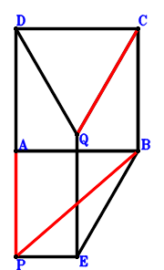
Answer：
\(\because \) DABC is a parallelogram \(\therefore \small\overrightarrow{BD}=\small\overrightarrow{BA} + \small\overrightarrow{BC}\).\(\because \) CQEB is a parallelogram \(\therefore \small\overrightarrow{BE}=- \small\overrightarrow{BC} + \small\overrightarrow{BQ}\).\(\because \) PE//AB and \(DQ^{2}=2 AB \cdot PE\) \( \therefore2 \small\overrightarrow{AB} \cdot \small\overrightarrow{PE} - \small\overrightarrow{QD}^{2}=- 2 \small\overrightarrow{BA} \cdot \left(\small\overrightarrow{BE} - \small\overrightarrow{BP}\right) - \left(\small\overrightarrow{BD} - \small\overrightarrow{BQ}\right)^{2}=- 2 \small\overrightarrow{BA} \cdot \left(- \small\overrightarrow{BC} - \small\overrightarrow{BP} + \small\overrightarrow{BQ}\right) - \left(\small\overrightarrow{BA} + \small\overrightarrow{BC} - \small\overrightarrow{BQ}\right)^{2}=- \small\overrightarrow{BA}^{2} + 2 \small\overrightarrow{BA} \cdot \small\overrightarrow{BP} - \small\overrightarrow{BC}^{2} + 2 \small\overrightarrow{BC} \cdot \small\overrightarrow{BQ} - \small\overrightarrow{BQ}^{2}=0.\)In conclusion, \(- \small\overrightarrow{BP}^{2} + \small\overrightarrow{PA}^{2} + \small\overrightarrow{QC}^{2}=- \small\overrightarrow{BP}^{2} + \left(\small\overrightarrow{BA} - \small\overrightarrow{BP}\right)^{2} + \left(\small\overrightarrow{BC} - \small\overrightarrow{BQ}\right)^{2}=\small\overrightarrow{BA}^{2} - 2 \small\overrightarrow{BA} \cdot \small\overrightarrow{BP} + \small\overrightarrow{BC}^{2} - 2 \small\overrightarrow{BC} \cdot \small\overrightarrow{BQ} + \small\overrightarrow{BQ}^{2}=0\), that is, \(PB^{2}=AP^{2} + QC^{2}\).
Exercise 17： Let DABC be a parallelogram. E is the midpoint of QB and PF. CF//AB and \(DQ^{2}=2 AB \cdot CF\). Prove that \(PB^{2}=AP^{2} + QC^{2}\).
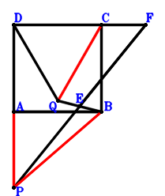
Answer：
\(\because \) DABC is a parallelogram \(\therefore \small\overrightarrow{BD}=\small\overrightarrow{BA} + \small\overrightarrow{BC}\).\(\because \) E is the midpoint of QB \(\therefore \small\overrightarrow{BE}=\dfrac{\small\overrightarrow{BQ}}{2}\).\(\because \) E is the midpoint of PF \(\therefore \small\overrightarrow{BF}=2 \small\overrightarrow{BE} - \small\overrightarrow{BP}=- \small\overrightarrow{BP} + \small\overrightarrow{BQ}\).\(\because \) CF//AB and \(DQ^{2}=2 AB \cdot CF\) \( \therefore2 \small\overrightarrow{AB} \cdot \small\overrightarrow{CF} - \small\overrightarrow{QD}^{2}=- 2 \small\overrightarrow{BA} \cdot \left(- \small\overrightarrow{BC} + \small\overrightarrow{BF}\right) - \left(\small\overrightarrow{BD} - \small\overrightarrow{BQ}\right)^{2}=- 2 \small\overrightarrow{BA} \cdot \left(- \small\overrightarrow{BC} - \small\overrightarrow{BP} + \small\overrightarrow{BQ}\right) - \left(\small\overrightarrow{BA} + \small\overrightarrow{BC} - \small\overrightarrow{BQ}\right)^{2}=- \small\overrightarrow{BA}^{2} + 2 \small\overrightarrow{BA} \cdot \small\overrightarrow{BP} - \small\overrightarrow{BC}^{2} + 2 \small\overrightarrow{BC} \cdot \small\overrightarrow{BQ} - \small\overrightarrow{BQ}^{2}=0.\)In conclusion, \(- \small\overrightarrow{BP}^{2} + \small\overrightarrow{PA}^{2} + \small\overrightarrow{QC}^{2}=- \small\overrightarrow{BP}^{2} + \left(\small\overrightarrow{BA} - \small\overrightarrow{BP}\right)^{2} + \left(\small\overrightarrow{BC} - \small\overrightarrow{BQ}\right)^{2}=\small\overrightarrow{BA}^{2} - 2 \small\overrightarrow{BA} \cdot \small\overrightarrow{BP} + \small\overrightarrow{BC}^{2} - 2 \small\overrightarrow{BC} \cdot \small\overrightarrow{BQ} + \small\overrightarrow{BQ}^{2}=0\), that is, \(PB^{2}=AP^{2} + QC^{2}\).
Exercise 32： Let QPBF be a parallelogram. D, E are the midpoints of QB, AC, respectively. CF//AB and \(ED^{2}=\dfrac{AB \cdot CF}{2}\). Prove that \(PB^{2}=PA^{2} + QC^{2}\).
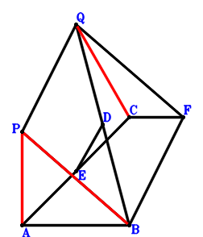
Answer：
\(\because \) D is the midpoint of QB \(\therefore \small\overrightarrow{BD}=\dfrac{\small\overrightarrow{BQ}}{2}\).\(\because \) E is the midpoint of AC \(\therefore \small\overrightarrow{BE}=\dfrac{\small\overrightarrow{BA}}{2} + \dfrac{\small\overrightarrow{BC}}{2}\).\(\because \) QPBF is a parallelogram \(\therefore \small\overrightarrow{BF}=- \small\overrightarrow{BP} + \small\overrightarrow{BQ}\).\(\because \) CF//AB and \(ED^{2}=\dfrac{AB \cdot CF}{2}\) \( \therefore\small\overrightarrow{BA} \cdot \small\overrightarrow{FC} - 2 \small\overrightarrow{ED}^{2}=\small\overrightarrow{BA} \cdot \left(\small\overrightarrow{BC} - \small\overrightarrow{BF}\right) - 2 \left(\small\overrightarrow{BD} - \small\overrightarrow{BE}\right)^{2}=\small\overrightarrow{BA} \cdot \left(\small\overrightarrow{BC} + \small\overrightarrow{BP} - \small\overrightarrow{BQ}\right) - 2 \left(- \dfrac{\small\overrightarrow{BA}}{2} - \dfrac{\small\overrightarrow{BC}}{2} + \dfrac{\small\overrightarrow{BQ}}{2}\right)^{2}=- \dfrac{\small\overrightarrow{BA}^{2}}{2} + \small\overrightarrow{BA} \cdot \small\overrightarrow{BP} - \dfrac{\small\overrightarrow{BC}^{2}}{2} + \small\overrightarrow{BC} \cdot \small\overrightarrow{BQ} - \dfrac{\small\overrightarrow{BQ}^{2}}{2}=0.\)In conclusion, \(- \small\overrightarrow{BP}^{2} + \small\overrightarrow{PA}^{2} + \small\overrightarrow{QC}^{2}=- \small\overrightarrow{BP}^{2} + \left(\small\overrightarrow{BA} - \small\overrightarrow{BP}\right)^{2} + \left(\small\overrightarrow{BC} - \small\overrightarrow{BQ}\right)^{2}=\small\overrightarrow{BA}^{2} - 2 \small\overrightarrow{BA} \cdot \small\overrightarrow{BP} + \small\overrightarrow{BC}^{2} - 2 \small\overrightarrow{BC} \cdot \small\overrightarrow{BQ} + \small\overrightarrow{BQ}^{2}=0\), that is, \(PB^{2}=PA^{2} + QC^{2}\).
Exercise 40： Let F, G be the midpoints of PC, BQ, respectively. D is the midpoint of AC and EQ. AB//FG and \(EB^{2}=4 AB \cdot FG\). Prove that \(PB^{2}=AP^{2} + CQ^{2}\).
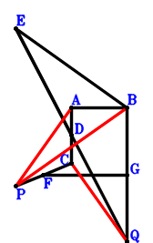
Answer：
\(\because \) D is the midpoint of AC \(\therefore \small\overrightarrow{BD}=\dfrac{\small\overrightarrow{BA}}{2} + \dfrac{\small\overrightarrow{BC}}{2}\).\(\because \) D is the midpoint of EQ \(\therefore \small\overrightarrow{BE}=2 \small\overrightarrow{BD} - \small\overrightarrow{BQ}=\small\overrightarrow{BA} + \small\overrightarrow{BC} - \small\overrightarrow{BQ}\).\(\because \) F is the midpoint of PC \(\therefore \small\overrightarrow{BF}=\dfrac{\small\overrightarrow{BC}}{2} + \dfrac{\small\overrightarrow{BP}}{2}\).\(\because \) G is the midpoint of BQ \(\therefore \small\overrightarrow{BG}=\dfrac{\small\overrightarrow{BQ}}{2}\).\(\because \) AB//FG and \(EB^{2}=4 AB \cdot FG\) \( \therefore4 \small\overrightarrow{AB} \cdot \small\overrightarrow{FG} - \small\overrightarrow{BE}^{2}=- 4 \small\overrightarrow{BA} \cdot \left(- \small\overrightarrow{BF} + \small\overrightarrow{BG}\right) - \small\overrightarrow{BE}^{2}=- 4 \small\overrightarrow{BA} \cdot \left(- \dfrac{\small\overrightarrow{BC}}{2} - \dfrac{\small\overrightarrow{BP}}{2} + \dfrac{\small\overrightarrow{BQ}}{2}\right) - \left(\small\overrightarrow{BA} + \small\overrightarrow{BC} - \small\overrightarrow{BQ}\right)^{2}=- \small\overrightarrow{BA}^{2} + 2 \small\overrightarrow{BA} \cdot \small\overrightarrow{BP} - \small\overrightarrow{BC}^{2} + 2 \small\overrightarrow{BC} \cdot \small\overrightarrow{BQ} - \small\overrightarrow{BQ}^{2}=0.\)In conclusion, \(- \small\overrightarrow{BP}^{2} + \small\overrightarrow{PA}^{2} + \small\overrightarrow{QC}^{2}=- \small\overrightarrow{BP}^{2} + \left(\small\overrightarrow{BA} - \small\overrightarrow{BP}\right)^{2} + \left(\small\overrightarrow{BC} - \small\overrightarrow{BQ}\right)^{2}=\small\overrightarrow{BA}^{2} - 2 \small\overrightarrow{BA} \cdot \small\overrightarrow{BP} + \small\overrightarrow{BC}^{2} - 2 \small\overrightarrow{BC} \cdot \small\overrightarrow{BQ} + \small\overrightarrow{BQ}^{2}=0\), that is, \(PB^{2}=AP^{2} + CQ^{2}\).
Exercise 117： Let D be the midpoint of PC. E is the midpoint of AF and QB. AB//DE and \(PB^{2}=4 AB \cdot DE\). Prove that \(CF^{2}=CQ^{2} + PA^{2}\).
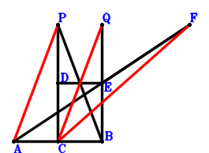
Answer：
\(\because \) D is the midpoint of PC \(\therefore \small\overrightarrow{BD}=\dfrac{\small\overrightarrow{BC}}{2} + \dfrac{\small\overrightarrow{BP}}{2}\).\(\because \) E is the midpoint of QB \(\therefore \small\overrightarrow{BE}=\dfrac{\small\overrightarrow{BQ}}{2}\).\(\because \) E is the midpoint of AF \(\therefore \small\overrightarrow{BF}=- \small\overrightarrow{BA} + 2 \small\overrightarrow{BE}=- \small\overrightarrow{BA} + \small\overrightarrow{BQ}\).\(\because \) AB//DE and \(PB^{2}=4 AB \cdot DE\) \( \therefore4 \small\overrightarrow{AB} \cdot \small\overrightarrow{DE} - \small\overrightarrow{BP}^{2}=- 4 \small\overrightarrow{BA} \cdot \left(- \small\overrightarrow{BD} + \small\overrightarrow{BE}\right) - \small\overrightarrow{BP}^{2}=- 4 \small\overrightarrow{BA} \cdot \left(- \dfrac{\small\overrightarrow{BC}}{2} - \dfrac{\small\overrightarrow{BP}}{2} + \dfrac{\small\overrightarrow{BQ}}{2}\right) - \small\overrightarrow{BP}^{2}=2 \small\overrightarrow{BA} \cdot \small\overrightarrow{BC} + 2 \small\overrightarrow{BA} \cdot \small\overrightarrow{BP} - 2 \small\overrightarrow{BA} \cdot \small\overrightarrow{BQ} - \small\overrightarrow{BP}^{2}=0.\)In conclusion, \(- \small\overrightarrow{FC}^{2} + \small\overrightarrow{PA}^{2} + \small\overrightarrow{QC}^{2}=\left(\small\overrightarrow{BA} - \small\overrightarrow{BP}\right)^{2} - \left(\small\overrightarrow{BC} - \small\overrightarrow{BF}\right)^{2} + \left(\small\overrightarrow{BC} - \small\overrightarrow{BQ}\right)^{2}=\left(\small\overrightarrow{BA} - \small\overrightarrow{BP}\right)^{2} + \left(\small\overrightarrow{BC} - \small\overrightarrow{BQ}\right)^{2} - \left(\small\overrightarrow{BA} + \small\overrightarrow{BC} - \small\overrightarrow{BQ}\right)^{2}=- 2 \small\overrightarrow{BA} \cdot \small\overrightarrow{BC} - 2 \small\overrightarrow{BA} \cdot \small\overrightarrow{BP} + 2 \small\overrightarrow{BA} \cdot \small\overrightarrow{BQ} + \small\overrightarrow{BP}^{2}=0\), that is, \(CF^{2}=CQ^{2} + PA^{2}\).
Exercise 214： Let PDCQ and QCEA be parallelograms. D, B, A are collinear and \(PA^{2}=2 BA \cdot DB\). Prove that \(CQ^{2}=BE^{2} + PB^{2}\).
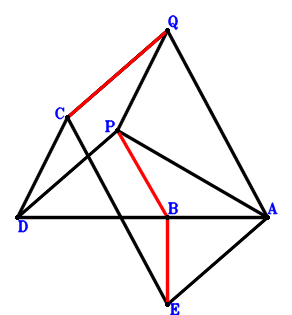
Answer：
\(\because \) PDCQ is a parallelogram \(\therefore \small\overrightarrow{BD}=\small\overrightarrow{BC} + \small\overrightarrow{BP} - \small\overrightarrow{BQ}\).\(\because \) QCEA is a parallelogram \(\therefore \small\overrightarrow{BE}=\small\overrightarrow{BA} + \small\overrightarrow{BC} - \small\overrightarrow{BQ}\).\(\because \) D, B, A are collinear and \(PA^{2}=2 BA \cdot DB\) \( \therefore2 \small\overrightarrow{AB} \cdot \small\overrightarrow{DB} + \small\overrightarrow{PA}^{2}=2 \small\overrightarrow{BA} \cdot \small\overrightarrow{BD} + \left(\small\overrightarrow{BA} - \small\overrightarrow{BP}\right)^{2}=2 \small\overrightarrow{BA} \cdot \left(\small\overrightarrow{BC} + \small\overrightarrow{BP} - \small\overrightarrow{BQ}\right) + \left(\small\overrightarrow{BA} - \small\overrightarrow{BP}\right)^{2}=\small\overrightarrow{BA}^{2} + 2 \small\overrightarrow{BA} \cdot \small\overrightarrow{BC} - 2 \small\overrightarrow{BA} \cdot \small\overrightarrow{BQ} + \small\overrightarrow{BP}^{2}=0.\)In conclusion, \(- \small\overrightarrow{BE}^{2} - \small\overrightarrow{BP}^{2} + \small\overrightarrow{QC}^{2}=- \small\overrightarrow{BE}^{2} - \small\overrightarrow{BP}^{2} + \left(\small\overrightarrow{BC} - \small\overrightarrow{BQ}\right)^{2}=- \small\overrightarrow{BP}^{2} + \left(\small\overrightarrow{BC} - \small\overrightarrow{BQ}\right)^{2} - \left(\small\overrightarrow{BA} + \small\overrightarrow{BC} - \small\overrightarrow{BQ}\right)^{2}=- \small\overrightarrow{BA}^{2} - 2 \small\overrightarrow{BA} \cdot \small\overrightarrow{BC} + 2 \small\overrightarrow{BA} \cdot \small\overrightarrow{BQ} - \small\overrightarrow{BP}^{2}=0\), that is, \(CQ^{2}=BE^{2} + PB^{2}\).
Exercise 224： Let DCBP be a parallelogram. E is the midpoint of CF and QB. BA//DQ and \(PA^{2}=2 BA \cdot DQ\). Prove that \(CQ^{2}=FA^{2} + PB^{2}\).
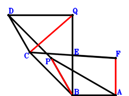
Answer：
\(\because \) DCBP is a parallelogram \(\therefore \small\overrightarrow{BD}=\small\overrightarrow{BC} + \small\overrightarrow{BP}\).\(\because \) E is the midpoint of QB \(\therefore \small\overrightarrow{BE}=\dfrac{\small\overrightarrow{BQ}}{2}\).\(\because \) E is the midpoint of CF \(\therefore \small\overrightarrow{BF}=- \small\overrightarrow{BC} + 2 \small\overrightarrow{BE}=- \small\overrightarrow{BC} + \small\overrightarrow{BQ}\).\(\because \) BA//DQ and \(PA^{2}=2 BA \cdot DQ\) \( \therefore2 \small\overrightarrow{AB} \cdot \small\overrightarrow{DQ} + \small\overrightarrow{PA}^{2}=- 2 \small\overrightarrow{BA} \cdot \left(- \small\overrightarrow{BD} + \small\overrightarrow{BQ}\right) + \left(\small\overrightarrow{BA} - \small\overrightarrow{BP}\right)^{2}=- 2 \small\overrightarrow{BA} \cdot \left(- \small\overrightarrow{BC} - \small\overrightarrow{BP} + \small\overrightarrow{BQ}\right) + \left(\small\overrightarrow{BA} - \small\overrightarrow{BP}\right)^{2}=\small\overrightarrow{BA}^{2} + 2 \small\overrightarrow{BA} \cdot \small\overrightarrow{BC} - 2 \small\overrightarrow{BA} \cdot \small\overrightarrow{BQ} + \small\overrightarrow{BP}^{2}=0.\)In conclusion, \(- \small\overrightarrow{BP}^{2} - \small\overrightarrow{FA}^{2} + \small\overrightarrow{QC}^{2}=- \small\overrightarrow{BP}^{2} - \left(\small\overrightarrow{BA} - \small\overrightarrow{BF}\right)^{2} + \left(\small\overrightarrow{BC} - \small\overrightarrow{BQ}\right)^{2}=- \small\overrightarrow{BP}^{2} + \left(\small\overrightarrow{BC} - \small\overrightarrow{BQ}\right)^{2} - \left(\small\overrightarrow{BA} + \small\overrightarrow{BC} - \small\overrightarrow{BQ}\right)^{2}=- \small\overrightarrow{BA}^{2} - 2 \small\overrightarrow{BA} \cdot \small\overrightarrow{BC} + 2 \small\overrightarrow{BA} \cdot \small\overrightarrow{BQ} - \small\overrightarrow{BP}^{2}=0\), that is, \(CQ^{2}=FA^{2} + PB^{2}\).
Exercise 268： Let QCFA be a parallelogram. D is the midpoint of QB and CE. PE//BA and \(PA^{2}=2 BA \cdot PE\). Prove that \(CQ^{2}=BF^{2} + PB^{2}\).
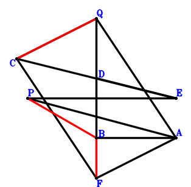
Answer：
\(\because \) D is the midpoint of QB \(\therefore \small\overrightarrow{BD}=\dfrac{\small\overrightarrow{BQ}}{2}\).\(\because \) D is the midpoint of CE \(\therefore \small\overrightarrow{BE}=- \small\overrightarrow{BC} + 2 \small\overrightarrow{BD}=- \small\overrightarrow{BC} + \small\overrightarrow{BQ}\).\(\because \) QCFA is a parallelogram \(\therefore \small\overrightarrow{BF}=\small\overrightarrow{BA} + \small\overrightarrow{BC} - \small\overrightarrow{BQ}\).\(\because \) PE//BA and \(PA^{2}=2 BA \cdot PE\) \( \therefore2 \small\overrightarrow{AB} \cdot \small\overrightarrow{PE} + \small\overrightarrow{PA}^{2}=- 2 \small\overrightarrow{BA} \cdot \left(\small\overrightarrow{BE} - \small\overrightarrow{BP}\right) + \left(\small\overrightarrow{BA} - \small\overrightarrow{BP}\right)^{2}=- 2 \small\overrightarrow{BA} \cdot \left(- \small\overrightarrow{BC} - \small\overrightarrow{BP} + \small\overrightarrow{BQ}\right) + \left(\small\overrightarrow{BA} - \small\overrightarrow{BP}\right)^{2}=\small\overrightarrow{BA}^{2} + 2 \small\overrightarrow{BA} \cdot \small\overrightarrow{BC} - 2 \small\overrightarrow{BA} \cdot \small\overrightarrow{BQ} + \small\overrightarrow{BP}^{2}=0.\)In conclusion, \(- \small\overrightarrow{BF}^{2} - \small\overrightarrow{BP}^{2} + \small\overrightarrow{QC}^{2}=- \small\overrightarrow{BF}^{2} - \small\overrightarrow{BP}^{2} + \left(\small\overrightarrow{BC} - \small\overrightarrow{BQ}\right)^{2}=- \small\overrightarrow{BP}^{2} + \left(\small\overrightarrow{BC} - \small\overrightarrow{BQ}\right)^{2} - \left(\small\overrightarrow{BA} + \small\overrightarrow{BC} - \small\overrightarrow{BQ}\right)^{2}=- \small\overrightarrow{BA}^{2} - 2 \small\overrightarrow{BA} \cdot \small\overrightarrow{BC} + 2 \small\overrightarrow{BA} \cdot \small\overrightarrow{BQ} - \small\overrightarrow{BP}^{2}=0\), that is, \(CQ^{2}=BF^{2} + PB^{2}\).
Exercise 294： Let DABC be a rectangle. AB//PQ and \(DQ^{2}=2 AB \cdot PQ\). Prove that \(PB^{2}=CQ^{2} + PA^{2}\).
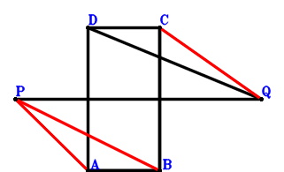
Answer：
\(\because \) DABC is a parallelogram \(\therefore \small\overrightarrow{BD}=\small\overrightarrow{BA} + \small\overrightarrow{BC}\).\(\because \) AB⊥BC \(\therefore \small\overrightarrow{BA} \cdot \small\overrightarrow{BC}=0\) . . . . . . \(①\)\(\because \) AB//PQ and \(DQ^{2}=2 AB \cdot PQ\) \(\therefore - 2 \small\overrightarrow{AB} \cdot \small\overrightarrow{QP} - \small\overrightarrow{QD}^{2}=2 \small\overrightarrow{BA} \cdot \left(\small\overrightarrow{BP} - \small\overrightarrow{BQ}\right) - \left(\small\overrightarrow{BD} - \small\overrightarrow{BQ}\right)^{2}=2 \small\overrightarrow{BA} \cdot \left(\small\overrightarrow{BP} - \small\overrightarrow{BQ}\right) - \left(\small\overrightarrow{BA} + \small\overrightarrow{BC} - \small\overrightarrow{BQ}\right)^{2}=- \small\overrightarrow{BA}^{2} - 2 \small\overrightarrow{BA} \cdot \small\overrightarrow{BC} + 2 \small\overrightarrow{BA} \cdot \small\overrightarrow{BP} - \small\overrightarrow{BC}^{2} + 2 \small\overrightarrow{BC} \cdot \small\overrightarrow{BQ} - \small\overrightarrow{BQ}^{2}=0\) . . . . . . \(②\)In conclusion, \(- \small\overrightarrow{BP}^{2} + \small\overrightarrow{PA}^{2} + \small\overrightarrow{QC}^{2}=- \small\overrightarrow{BP}^{2} + \left(\small\overrightarrow{BA} - \small\overrightarrow{BP}\right)^{2} + \left(\small\overrightarrow{BC} - \small\overrightarrow{BQ}\right)^{2}=\small\overrightarrow{BA}^{2} - 2 \small\overrightarrow{BA} \cdot \small\overrightarrow{BP} + \small\overrightarrow{BC}^{2} - 2 \small\overrightarrow{BC} \cdot \small\overrightarrow{BQ} + \small\overrightarrow{BQ}^{2}=-2\cdot①-②=0\), that is, \(PB^{2}=CQ^{2} + PA^{2}\).
Exercise 297： Let D be the midpoint of AE and BQ. AB⊥BC. AB//PQ and \(CE^{2}=2 AB \cdot PQ\). Prove that \(PB^{2}=CQ^{2} + PA^{2}\).
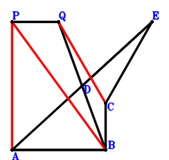
Answer：
\(\because \) D is the midpoint of BQ \(\therefore \small\overrightarrow{BD}=\dfrac{\small\overrightarrow{BQ}}{2}\).\(\because \) D is the midpoint of AE \(\therefore \small\overrightarrow{BE}=- \small\overrightarrow{BA} + 2 \small\overrightarrow{BD}=- \small\overrightarrow{BA} + \small\overrightarrow{BQ}\).\(\because \) AB⊥BC \(\therefore \small\overrightarrow{BA} \cdot \small\overrightarrow{BC}=0\) . . . . . . \(①\)\(\because \) AB//PQ and \(CE^{2}=2 AB \cdot PQ\) \(\therefore - 2 \small\overrightarrow{AB} \cdot \small\overrightarrow{QP} - \small\overrightarrow{EC}^{2}=2 \small\overrightarrow{BA} \cdot \left(\small\overrightarrow{BP} - \small\overrightarrow{BQ}\right) - \left(\small\overrightarrow{BC} - \small\overrightarrow{BE}\right)^{2}=2 \small\overrightarrow{BA} \cdot \left(\small\overrightarrow{BP} - \small\overrightarrow{BQ}\right) - \left(\small\overrightarrow{BA} + \small\overrightarrow{BC} - \small\overrightarrow{BQ}\right)^{2}=- \small\overrightarrow{BA}^{2} - 2 \small\overrightarrow{BA} \cdot \small\overrightarrow{BC} + 2 \small\overrightarrow{BA} \cdot \small\overrightarrow{BP} - \small\overrightarrow{BC}^{2} + 2 \small\overrightarrow{BC} \cdot \small\overrightarrow{BQ} - \small\overrightarrow{BQ}^{2}=0\) . . . . . . \(②\)In conclusion, \(- \small\overrightarrow{BP}^{2} + \small\overrightarrow{PA}^{2} + \small\overrightarrow{QC}^{2}=- \small\overrightarrow{BP}^{2} + \left(\small\overrightarrow{BA} - \small\overrightarrow{BP}\right)^{2} + \left(\small\overrightarrow{BC} - \small\overrightarrow{BQ}\right)^{2}=\small\overrightarrow{BA}^{2} - 2 \small\overrightarrow{BA} \cdot \small\overrightarrow{BP} + \small\overrightarrow{BC}^{2} - 2 \small\overrightarrow{BC} \cdot \small\overrightarrow{BQ} + \small\overrightarrow{BQ}^{2}=-2\cdot①-②=0\), that is, \(PB^{2}=CQ^{2} + PA^{2}\).
Exercise 301： Let QCBD be a parallelogram. AB⊥BC. AB//PQ and \(PB^{2}=2 AB \cdot PQ\). Prove that \(AD^{2}=AP^{2} + CQ^{2}\).
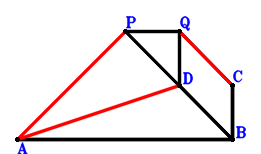
Answer：
\(\because \) QCBD is a parallelogram \(\therefore \small\overrightarrow{BD}=- \small\overrightarrow{BC} + \small\overrightarrow{BQ}\).\(\because \) AB⊥BC \(\therefore \small\overrightarrow{BA} \cdot \small\overrightarrow{BC}=0\) . . . . . . \(①\)\(\because \) AB//PQ and \(PB^{2}=2 AB \cdot PQ\) \(\therefore - 2 \small\overrightarrow{AB} \cdot \small\overrightarrow{QP} - \small\overrightarrow{BP}^{2}=2 \small\overrightarrow{BA} \cdot \left(\small\overrightarrow{BP} - \small\overrightarrow{BQ}\right) - \small\overrightarrow{BP}^{2}=2 \small\overrightarrow{BA} \cdot \small\overrightarrow{BP} - 2 \small\overrightarrow{BA} \cdot \small\overrightarrow{BQ} - \small\overrightarrow{BP}^{2}=0\) . . . . . . \(②\)In conclusion, \(- \small\overrightarrow{DA}^{2} + \small\overrightarrow{PA}^{2} + \small\overrightarrow{QC}^{2}=- \left(\small\overrightarrow{BA} - \small\overrightarrow{BD}\right)^{2} + \left(\small\overrightarrow{BA} - \small\overrightarrow{BP}\right)^{2} + \left(\small\overrightarrow{BC} - \small\overrightarrow{BQ}\right)^{2}=\left(\small\overrightarrow{BA} - \small\overrightarrow{BP}\right)^{2} + \left(\small\overrightarrow{BC} - \small\overrightarrow{BQ}\right)^{2} - \left(\small\overrightarrow{BA} + \small\overrightarrow{BC} - \small\overrightarrow{BQ}\right)^{2}=- 2 \small\overrightarrow{BA} \cdot \small\overrightarrow{BC} - 2 \small\overrightarrow{BA} \cdot \small\overrightarrow{BP} + 2 \small\overrightarrow{BA} \cdot \small\overrightarrow{BQ} + \small\overrightarrow{BP}^{2}=-2\cdot①-②=0\), that is, \(AD^{2}=AP^{2} + CQ^{2}\).
Exercise 315： Let D be the midpoint of QB and EA. CB⊥BA. BA//PQ and \(QC^{2}=2 BA \cdot PQ\). Prove that \(PA^{2}=EC^{2} + PB^{2}\).
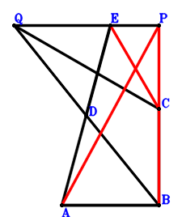
Answer：
\(\because \) D is the midpoint of QB \(\therefore \small\overrightarrow{BD}=\dfrac{\small\overrightarrow{BQ}}{2}\).\(\because \) D is the midpoint of EA \(\therefore \small\overrightarrow{BE}=- \small\overrightarrow{BA} + 2 \small\overrightarrow{BD}=- \small\overrightarrow{BA} + \small\overrightarrow{BQ}\).\(\because \) CB⊥BA \(\therefore \small\overrightarrow{BA} \cdot \small\overrightarrow{BC}=0\) . . . . . . \(①\)\(\because \) BA//PQ and \(QC^{2}=2 BA \cdot PQ\) \(\therefore - 2 \small\overrightarrow{AB} \cdot \small\overrightarrow{QP} + \small\overrightarrow{QC}^{2}=2 \small\overrightarrow{BA} \cdot \left(\small\overrightarrow{BP} - \small\overrightarrow{BQ}\right) + \left(\small\overrightarrow{BC} - \small\overrightarrow{BQ}\right)^{2}=2 \small\overrightarrow{BA} \cdot \small\overrightarrow{BP} - 2 \small\overrightarrow{BA} \cdot \small\overrightarrow{BQ} + \small\overrightarrow{BC}^{2} - 2 \small\overrightarrow{BC} \cdot \small\overrightarrow{BQ} + \small\overrightarrow{BQ}^{2}=0\) . . . . . . \(②\)In conclusion, \(- \small\overrightarrow{BP}^{2} - \small\overrightarrow{EC}^{2} + \small\overrightarrow{PA}^{2}=- \small\overrightarrow{BP}^{2} + \left(\small\overrightarrow{BA} - \small\overrightarrow{BP}\right)^{2} - \left(\small\overrightarrow{BC} - \small\overrightarrow{BE}\right)^{2}=- \small\overrightarrow{BP}^{2} + \left(\small\overrightarrow{BA} - \small\overrightarrow{BP}\right)^{2} - \left(\small\overrightarrow{BA} + \small\overrightarrow{BC} - \small\overrightarrow{BQ}\right)^{2}=- 2 \small\overrightarrow{BA} \cdot \small\overrightarrow{BC} - 2 \small\overrightarrow{BA} \cdot \small\overrightarrow{BP} + 2 \small\overrightarrow{BA} \cdot \small\overrightarrow{BQ} - \small\overrightarrow{BC}^{2} + 2 \small\overrightarrow{BC} \cdot \small\overrightarrow{BQ} - \small\overrightarrow{BQ}^{2}=-2\cdot①-②=0\), that is, \(PA^{2}=EC^{2} + PB^{2}\).
Exercise 329： Let QABD be a parallelogram. AB⊥QP. C, A, B are collinear and \(CD^{2}=2 AB \cdot CB\). Prove that \(PB^{2}=CQ^{2} + PA^{2}\).
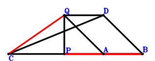
Answer：
\(\because \) QABD is a parallelogram \(\therefore \small\overrightarrow{BD}=- \small\overrightarrow{BA} + \small\overrightarrow{BQ}\).\(\because \) AB⊥QP \(\therefore \small\overrightarrow{AB} \cdot \small\overrightarrow{QP}=- \small\overrightarrow{BA} \cdot \left(\small\overrightarrow{BP} - \small\overrightarrow{BQ}\right)=- \small\overrightarrow{BA} \cdot \small\overrightarrow{BP} + \small\overrightarrow{BA} \cdot \small\overrightarrow{BQ}=0\) . . . . . . \(①\)\(\because \) C, A, B are collinear and \(CD^{2}=2 AB \cdot CB\) \(\therefore 2 \small\overrightarrow{AB} \cdot \small\overrightarrow{CB} - \small\overrightarrow{DC}^{2}=2 \small\overrightarrow{BA} \cdot \small\overrightarrow{BC} - \left(\small\overrightarrow{BC} - \small\overrightarrow{BD}\right)^{2}=2 \small\overrightarrow{BA} \cdot \small\overrightarrow{BC} - \left(\small\overrightarrow{BA} + \small\overrightarrow{BC} - \small\overrightarrow{BQ}\right)^{2}=- \small\overrightarrow{BA}^{2} + 2 \small\overrightarrow{BA} \cdot \small\overrightarrow{BQ} - \small\overrightarrow{BC}^{2} + 2 \small\overrightarrow{BC} \cdot \small\overrightarrow{BQ} - \small\overrightarrow{BQ}^{2}=0\) . . . . . . \(②\)In conclusion, \(- \small\overrightarrow{BP}^{2} + \small\overrightarrow{PA}^{2} + \small\overrightarrow{QC}^{2}=- \small\overrightarrow{BP}^{2} + \left(\small\overrightarrow{BA} - \small\overrightarrow{BP}\right)^{2} + \left(\small\overrightarrow{BC} - \small\overrightarrow{BQ}\right)^{2}=\small\overrightarrow{BA}^{2} - 2 \small\overrightarrow{BA} \cdot \small\overrightarrow{BP} + \small\overrightarrow{BC}^{2} - 2 \small\overrightarrow{BC} \cdot \small\overrightarrow{BQ} + \small\overrightarrow{BQ}^{2}=2\cdot①-②=0\), that is, \(PB^{2}=CQ^{2} + PA^{2}\).
Exercise 345： Let D be the midpoint of CA and EQ. AB⊥QP. C, A, B are collinear and \(PB^{2}=2 AB \cdot CB\). Prove that \(EB^{2}=CQ^{2} + PA^{2}\).
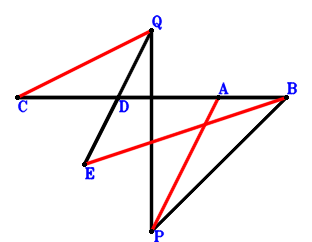
Answer：
\(\because \) D is the midpoint of CA \(\therefore \small\overrightarrow{BD}=\dfrac{\small\overrightarrow{BA}}{2} + \dfrac{\small\overrightarrow{BC}}{2}\).\(\because \) D is the midpoint of EQ \(\therefore \small\overrightarrow{BE}=2 \small\overrightarrow{BD} - \small\overrightarrow{BQ}=\small\overrightarrow{BA} + \small\overrightarrow{BC} - \small\overrightarrow{BQ}\).\(\because \) AB⊥QP \(\therefore \small\overrightarrow{AB} \cdot \small\overrightarrow{QP}=- \small\overrightarrow{BA} \cdot \left(\small\overrightarrow{BP} - \small\overrightarrow{BQ}\right)=- \small\overrightarrow{BA} \cdot \small\overrightarrow{BP} + \small\overrightarrow{BA} \cdot \small\overrightarrow{BQ}=0\) . . . . . . \(①\)\(\because \) C, A, B are collinear and \(PB^{2}=2 AB \cdot CB\) \(\therefore 2 \small\overrightarrow{BA} \cdot \small\overrightarrow{BC} - \small\overrightarrow{BP}^{2}=0\) . . . . . . \(②\)In conclusion, \(- \small\overrightarrow{BE}^{2} + \small\overrightarrow{PA}^{2} + \small\overrightarrow{QC}^{2}=- \small\overrightarrow{BE}^{2} + \left(\small\overrightarrow{BA} - \small\overrightarrow{BP}\right)^{2} + \left(\small\overrightarrow{BC} - \small\overrightarrow{BQ}\right)^{2}=\left(\small\overrightarrow{BA} - \small\overrightarrow{BP}\right)^{2} + \left(\small\overrightarrow{BC} - \small\overrightarrow{BQ}\right)^{2} - \left(\small\overrightarrow{BA} + \small\overrightarrow{BC} - \small\overrightarrow{BQ}\right)^{2}=- 2 \small\overrightarrow{BA} \cdot \small\overrightarrow{BC} - 2 \small\overrightarrow{BA} \cdot \small\overrightarrow{BP} + 2 \small\overrightarrow{BA} \cdot \small\overrightarrow{BQ} + \small\overrightarrow{BP}^{2}=2\cdot①-②=0\), that is, \(EB^{2}=CQ^{2} + PA^{2}\).
Exercise 366： Let QCBD and QPBE be parallelograms. AP=PB and QC=AD. Prove that EC⊥AB.
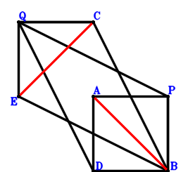
Answer：
\(\because \) QCBD is a parallelogram \(\therefore \small\overrightarrow{BD}=- \small\overrightarrow{BC} + \small\overrightarrow{BQ}\).\(\because \) QPBE is a parallelogram \(\therefore \small\overrightarrow{BE}=- \small\overrightarrow{BP} + \small\overrightarrow{BQ}\).\(\because \) AP=PB \(\therefore - \small\overrightarrow{BP}^{2} + \small\overrightarrow{PA}^{2}=- \small\overrightarrow{BP}^{2} + \left(\small\overrightarrow{BA} - \small\overrightarrow{BP}\right)^{2}=\small\overrightarrow{BA}^{2} - 2 \small\overrightarrow{BA} \cdot \small\overrightarrow{BP}=0\) . . . . . . \(①\)\(\because \) QC=AD \(\therefore - \small\overrightarrow{DA}^{2} + \small\overrightarrow{QC}^{2}=- \left(\small\overrightarrow{BA} - \small\overrightarrow{BD}\right)^{2} + \left(\small\overrightarrow{BC} - \small\overrightarrow{BQ}\right)^{2}=\left(\small\overrightarrow{BC} - \small\overrightarrow{BQ}\right)^{2} - \left(\small\overrightarrow{BA} + \small\overrightarrow{BC} - \small\overrightarrow{BQ}\right)^{2}=- \small\overrightarrow{BA}^{2} - 2 \small\overrightarrow{BA} \cdot \small\overrightarrow{BC} + 2 \small\overrightarrow{BA} \cdot \small\overrightarrow{BQ}=0\) . . . . . . \(②\)In conclusion, \(\small\overrightarrow{AB} \cdot \small\overrightarrow{CE}=- \small\overrightarrow{BA} \cdot \left(- \small\overrightarrow{BC} + \small\overrightarrow{BE}\right)=- \small\overrightarrow{BA} \cdot \left(- \small\overrightarrow{BC} - \small\overrightarrow{BP} + \small\overrightarrow{BQ}\right)=\small\overrightarrow{BA} \cdot \small\overrightarrow{BC} + \small\overrightarrow{BA} \cdot \small\overrightarrow{BP} - \small\overrightarrow{BA} \cdot \small\overrightarrow{BQ}=-1/2\cdot①-1/2\cdot②=0\), that is, EC⊥AB.
Exercise 371： Let QPEC and QCBD be parallelograms. PA=PB and CQ=AD. Prove that EB⊥BA.
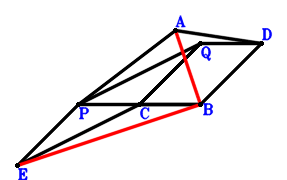
Answer：
\(\because \) QCBD is a parallelogram \(\therefore \small\overrightarrow{BD}=- \small\overrightarrow{BC} + \small\overrightarrow{BQ}\).\(\because \) QPEC is a parallelogram \(\therefore \small\overrightarrow{BE}=\small\overrightarrow{BC} + \small\overrightarrow{BP} - \small\overrightarrow{BQ}\).\(\because \) PA=PB \(\therefore - \small\overrightarrow{BP}^{2} + \small\overrightarrow{PA}^{2}=- \small\overrightarrow{BP}^{2} + \left(\small\overrightarrow{BA} - \small\overrightarrow{BP}\right)^{2}=\small\overrightarrow{BA}^{2} - 2 \small\overrightarrow{BA} \cdot \small\overrightarrow{BP}=0\) . . . . . . \(①\)\(\because \) CQ=AD \(\therefore - \small\overrightarrow{DA}^{2} + \small\overrightarrow{QC}^{2}=- \left(\small\overrightarrow{BA} - \small\overrightarrow{BD}\right)^{2} + \left(\small\overrightarrow{BC} - \small\overrightarrow{BQ}\right)^{2}=\left(\small\overrightarrow{BC} - \small\overrightarrow{BQ}\right)^{2} - \left(\small\overrightarrow{BA} + \small\overrightarrow{BC} - \small\overrightarrow{BQ}\right)^{2}=- \small\overrightarrow{BA}^{2} - 2 \small\overrightarrow{BA} \cdot \small\overrightarrow{BC} + 2 \small\overrightarrow{BA} \cdot \small\overrightarrow{BQ}=0\) . . . . . . \(②\)In conclusion, \(\small\overrightarrow{BA} \cdot \small\overrightarrow{BE}=\small\overrightarrow{BA} \cdot \left(\small\overrightarrow{BC} + \small\overrightarrow{BP} - \small\overrightarrow{BQ}\right)=\small\overrightarrow{BA} \cdot \small\overrightarrow{BC} + \small\overrightarrow{BA} \cdot \small\overrightarrow{BP} - \small\overrightarrow{BA} \cdot \small\overrightarrow{BQ}=-1/2\cdot①-1/2\cdot②=0\), that is, EB⊥BA.
Exercise 374： Let ECBP and AQDB be parallelograms. QC=CD and AP=PB. Prove that AB⊥EQ.
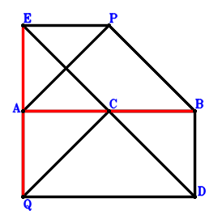
Answer：
\(\because \) AQDB is a parallelogram \(\therefore \small\overrightarrow{BD}=- \small\overrightarrow{BA} + \small\overrightarrow{BQ}\).\(\because \) ECBP is a parallelogram \(\therefore \small\overrightarrow{BE}=\small\overrightarrow{BC} + \small\overrightarrow{BP}\).\(\because \) QC=CD \(\therefore - \small\overrightarrow{DC}^{2} + \small\overrightarrow{QC}^{2}=- \left(\small\overrightarrow{BC} - \small\overrightarrow{BD}\right)^{2} + \left(\small\overrightarrow{BC} - \small\overrightarrow{BQ}\right)^{2}=\left(\small\overrightarrow{BC} - \small\overrightarrow{BQ}\right)^{2} - \left(\small\overrightarrow{BA} + \small\overrightarrow{BC} - \small\overrightarrow{BQ}\right)^{2}=- \small\overrightarrow{BA}^{2} - 2 \small\overrightarrow{BA} \cdot \small\overrightarrow{BC} + 2 \small\overrightarrow{BA} \cdot \small\overrightarrow{BQ}=0\) . . . . . . \(①\)\(\because \) AP=PB \(\therefore - \small\overrightarrow{BP}^{2} + \small\overrightarrow{PA}^{2}=- \small\overrightarrow{BP}^{2} + \left(\small\overrightarrow{BA} - \small\overrightarrow{BP}\right)^{2}=\small\overrightarrow{BA}^{2} - 2 \small\overrightarrow{BA} \cdot \small\overrightarrow{BP}=0\) . . . . . . \(②\)In conclusion, \(\small\overrightarrow{AB} \cdot \small\overrightarrow{EQ}=- \small\overrightarrow{BA} \cdot \left(- \small\overrightarrow{BE} + \small\overrightarrow{BQ}\right)=- \small\overrightarrow{BA} \cdot \left(- \small\overrightarrow{BC} - \small\overrightarrow{BP} + \small\overrightarrow{BQ}\right)=\small\overrightarrow{BA} \cdot \small\overrightarrow{BC} + \small\overrightarrow{BA} \cdot \small\overrightarrow{BP} - \small\overrightarrow{BA} \cdot \small\overrightarrow{BQ}=-1/2\cdot①-1/2\cdot②=0\), that is, AB⊥EQ.
Exercise 383： Let QABD be a parallelogram. AP=PB and QC=CD. Given that A, B, C are collinear and AB//PQ, prove that \(AB·PQ=AB·BC\).
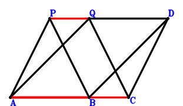
Answer：
\(\because \) QABD is a parallelogram \(\therefore \small\overrightarrow{BD}=- \small\overrightarrow{BA} + \small\overrightarrow{BQ}\).\(\because \) QC=CD \(\therefore - \small\overrightarrow{DC}^{2} + \small\overrightarrow{QC}^{2}=- \left(\small\overrightarrow{BC} - \small\overrightarrow{BD}\right)^{2} + \left(\small\overrightarrow{BC} - \small\overrightarrow{BQ}\right)^{2}=\left(\small\overrightarrow{BC} - \small\overrightarrow{BQ}\right)^{2} - \left(\small\overrightarrow{BA} + \small\overrightarrow{BC} - \small\overrightarrow{BQ}\right)^{2}=- \small\overrightarrow{BA}^{2} - 2 \small\overrightarrow{BA} \cdot \small\overrightarrow{BC} + 2 \small\overrightarrow{BA} \cdot \small\overrightarrow{BQ}=0\) . . . . . . \(①\)\(\because \) AP=PB \(\therefore - \small\overrightarrow{BP}^{2} + \small\overrightarrow{PA}^{2}=- \small\overrightarrow{BP}^{2} + \left(\small\overrightarrow{BA} - \small\overrightarrow{BP}\right)^{2}=\small\overrightarrow{BA}^{2} - 2 \small\overrightarrow{BA} \cdot \small\overrightarrow{BP}=0\) . . . . . . \(②\)In conclusion, \(\small\overrightarrow{AB} \cdot \small\overrightarrow{CB} - \small\overrightarrow{AB} \cdot \small\overrightarrow{QP}=\small\overrightarrow{BA} \cdot \small\overrightarrow{BC} + \small\overrightarrow{BA} \cdot \left(\small\overrightarrow{BP} - \small\overrightarrow{BQ}\right)=\small\overrightarrow{BA} \cdot \small\overrightarrow{BC} + \small\overrightarrow{BA} \cdot \small\overrightarrow{BP} - \small\overrightarrow{BA} \cdot \small\overrightarrow{BQ}=-1/2\cdot①-1/2\cdot②=0\)\(\because\) A, B, C are collinear and AB//PQ \(\therefore\) \(AB·PQ=AB·BC\).
Exercise 391： Let QCEP and DCBA be parallelograms. PA=PB and CQ=DQ. Prove that EB⊥BA.
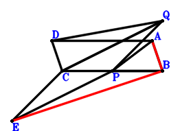
Answer：
\(\because \) DCBA is a parallelogram \(\therefore \small\overrightarrow{BD}=\small\overrightarrow{BA} + \small\overrightarrow{BC}\).\(\because \) QCEP is a parallelogram \(\therefore \small\overrightarrow{BE}=\small\overrightarrow{BC} + \small\overrightarrow{BP} - \small\overrightarrow{BQ}\).\(\because \) CQ=DQ \(\therefore \small\overrightarrow{QC}^{2} - \small\overrightarrow{QD}^{2}=\left(\small\overrightarrow{BC} - \small\overrightarrow{BQ}\right)^{2} - \left(\small\overrightarrow{BD} - \small\overrightarrow{BQ}\right)^{2}=\left(\small\overrightarrow{BC} - \small\overrightarrow{BQ}\right)^{2} - \left(\small\overrightarrow{BA} + \small\overrightarrow{BC} - \small\overrightarrow{BQ}\right)^{2}=- \small\overrightarrow{BA}^{2} - 2 \small\overrightarrow{BA} \cdot \small\overrightarrow{BC} + 2 \small\overrightarrow{BA} \cdot \small\overrightarrow{BQ}=0\) . . . . . . \(①\)\(\because \) PA=PB \(\therefore - \small\overrightarrow{BP}^{2} + \small\overrightarrow{PA}^{2}=- \small\overrightarrow{BP}^{2} + \left(\small\overrightarrow{BA} - \small\overrightarrow{BP}\right)^{2}=\small\overrightarrow{BA}^{2} - 2 \small\overrightarrow{BA} \cdot \small\overrightarrow{BP}=0\) . . . . . . \(②\)In conclusion, \(\small\overrightarrow{BA} \cdot \small\overrightarrow{BE}=\small\overrightarrow{BA} \cdot \left(\small\overrightarrow{BC} + \small\overrightarrow{BP} - \small\overrightarrow{BQ}\right)=\small\overrightarrow{BA} \cdot \small\overrightarrow{BC} + \small\overrightarrow{BA} \cdot \small\overrightarrow{BP} - \small\overrightarrow{BA} \cdot \small\overrightarrow{BQ}=-1/2\cdot①-1/2\cdot②=0\), that is, EB⊥BA.
Exercise 392： Let DABC be a parallelogram. E is the midpoint of PC and QF. PA=PB and QC=QD. Prove that AB⊥BF.
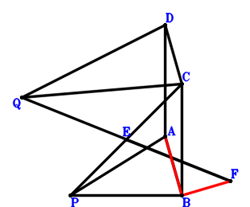
Answer：
\(\because \) DABC is a parallelogram \(\therefore \small\overrightarrow{BD}=\small\overrightarrow{BA} + \small\overrightarrow{BC}\).\(\because \) E is the midpoint of PC \(\therefore \small\overrightarrow{BE}=\dfrac{\small\overrightarrow{BC}}{2} + \dfrac{\small\overrightarrow{BP}}{2}\).\(\because \) E is the midpoint of QF \(\therefore \small\overrightarrow{BF}=2 \small\overrightarrow{BE} - \small\overrightarrow{BQ}=\small\overrightarrow{BC} + \small\overrightarrow{BP} - \small\overrightarrow{BQ}\).\(\because \) QC=QD \(\therefore \small\overrightarrow{QC}^{2} - \small\overrightarrow{QD}^{2}=\left(\small\overrightarrow{BC} - \small\overrightarrow{BQ}\right)^{2} - \left(\small\overrightarrow{BD} - \small\overrightarrow{BQ}\right)^{2}=\left(\small\overrightarrow{BC} - \small\overrightarrow{BQ}\right)^{2} - \left(\small\overrightarrow{BA} + \small\overrightarrow{BC} - \small\overrightarrow{BQ}\right)^{2}=- \small\overrightarrow{BA}^{2} - 2 \small\overrightarrow{BA} \cdot \small\overrightarrow{BC} + 2 \small\overrightarrow{BA} \cdot \small\overrightarrow{BQ}=0\) . . . . . . \(①\)\(\because \) PA=PB \(\therefore - \small\overrightarrow{BP}^{2} + \small\overrightarrow{PA}^{2}=- \small\overrightarrow{BP}^{2} + \left(\small\overrightarrow{BA} - \small\overrightarrow{BP}\right)^{2}=\small\overrightarrow{BA}^{2} - 2 \small\overrightarrow{BA} \cdot \small\overrightarrow{BP}=0\) . . . . . . \(②\)In conclusion, \(\small\overrightarrow{BA} \cdot \small\overrightarrow{BF}=\small\overrightarrow{BA} \cdot \left(\small\overrightarrow{BC} + \small\overrightarrow{BP} - \small\overrightarrow{BQ}\right)=\small\overrightarrow{BA} \cdot \small\overrightarrow{BC} + \small\overrightarrow{BA} \cdot \small\overrightarrow{BP} - \small\overrightarrow{BA} \cdot \small\overrightarrow{BQ}=-1/2\cdot①-1/2\cdot②=0\), that is, AB⊥BF.
Exercise 402： Let CDAQ be a parallelogram. E is the midpoint of FQ and PC. CQ=DB and PA=PB. Prove that FB⊥BA.
Answer：
\(\because \) CDAQ is a parallelogram \(\therefore \small\overrightarrow{BD}=\small\overrightarrow{BA} + \small\overrightarrow{BC} - \small\overrightarrow{BQ}\).\(\because \) E is the midpoint of PC \(\therefore \small\overrightarrow{BE}=\dfrac{\small\overrightarrow{BC}}{2} + \dfrac{\small\overrightarrow{BP}}{2}\).\(\because \) E is the midpoint of FQ \(\therefore \small\overrightarrow{BF}=2 \small\overrightarrow{BE} - \small\overrightarrow{BQ}=\small\overrightarrow{BC} + \small\overrightarrow{BP} - \small\overrightarrow{BQ}\).\(\because \) PA=PB \(\therefore - \small\overrightarrow{BP}^{2} + \small\overrightarrow{PA}^{2}=- \small\overrightarrow{BP}^{2} + \left(\small\overrightarrow{BA} - \small\overrightarrow{BP}\right)^{2}=\small\overrightarrow{BA}^{2} - 2 \small\overrightarrow{BA} \cdot \small\overrightarrow{BP}=0\) . . . . . . \(①\)\(\because \) CQ=DB \(\therefore - \small\overrightarrow{BD}^{2} + \small\overrightarrow{QC}^{2}=- \small\overrightarrow{BD}^{2} + \left(\small\overrightarrow{BC} - \small\overrightarrow{BQ}\right)^{2}=\left(\small\overrightarrow{BC} - \small\overrightarrow{BQ}\right)^{2} - \left(\small\overrightarrow{BA} + \small\overrightarrow{BC} - \small\overrightarrow{BQ}\right)^{2}=- \small\overrightarrow{BA}^{2} - 2 \small\overrightarrow{BA} \cdot \small\overrightarrow{BC} + 2 \small\overrightarrow{BA} \cdot \small\overrightarrow{BQ}=0\) . . . . . . \(②\)In conclusion, \(\small\overrightarrow{BA} \cdot \small\overrightarrow{BF}=\small\overrightarrow{BA} \cdot \left(\small\overrightarrow{BC} + \small\overrightarrow{BP} - \small\overrightarrow{BQ}\right)=\small\overrightarrow{BA} \cdot \small\overrightarrow{BC} + \small\overrightarrow{BA} \cdot \small\overrightarrow{BP} - \small\overrightarrow{BA} \cdot \small\overrightarrow{BQ}=-1/2\cdot①-1/2\cdot②=0\), that is, FB⊥BA.
Exercise 403： Let QADC be a parallelogram. AP=PB and QC=DB. Given that A, C, B are collinear and AB//QP, prove that \(AB·QP=AB·CB\).
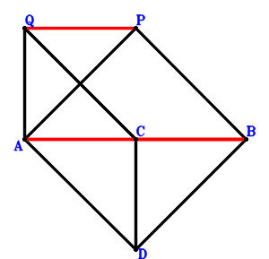
Answer：
\(\because \) QADC is a parallelogram \(\therefore \small\overrightarrow{BD}=\small\overrightarrow{BA} + \small\overrightarrow{BC} - \small\overrightarrow{BQ}\).\(\because \) AP=PB \(\therefore - \small\overrightarrow{BP}^{2} + \small\overrightarrow{PA}^{2}=- \small\overrightarrow{BP}^{2} + \left(\small\overrightarrow{BA} - \small\overrightarrow{BP}\right)^{2}=\small\overrightarrow{BA}^{2} - 2 \small\overrightarrow{BA} \cdot \small\overrightarrow{BP}=0\) . . . . . . \(①\)\(\because \) QC=DB \(\therefore - \small\overrightarrow{BD}^{2} + \small\overrightarrow{QC}^{2}=- \small\overrightarrow{BD}^{2} + \left(\small\overrightarrow{BC} - \small\overrightarrow{BQ}\right)^{2}=\left(\small\overrightarrow{BC} - \small\overrightarrow{BQ}\right)^{2} - \left(\small\overrightarrow{BA} + \small\overrightarrow{BC} - \small\overrightarrow{BQ}\right)^{2}=- \small\overrightarrow{BA}^{2} - 2 \small\overrightarrow{BA} \cdot \small\overrightarrow{BC} + 2 \small\overrightarrow{BA} \cdot \small\overrightarrow{BQ}=0\) . . . . . . \(②\)In conclusion, \(\small\overrightarrow{AB} \cdot \small\overrightarrow{CB} - \small\overrightarrow{AB} \cdot \small\overrightarrow{QP}=\small\overrightarrow{BA} \cdot \small\overrightarrow{BC} + \small\overrightarrow{BA} \cdot \left(\small\overrightarrow{BP} - \small\overrightarrow{BQ}\right)=\small\overrightarrow{BA} \cdot \small\overrightarrow{BC} + \small\overrightarrow{BA} \cdot \small\overrightarrow{BP} - \small\overrightarrow{BA} \cdot \small\overrightarrow{BQ}=-1/2\cdot①-1/2\cdot②=0\)\(\because\) A, C, B are collinear and AB//QP \(\therefore\) \(AB·QP=AB·CB\).
Exercise 421： Let QPFC be a parallelogram. D is the midpoint of QB and EA. QC=EC and PA=PB. Prove that AB⊥BF.
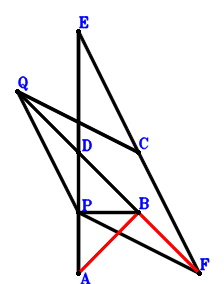
Answer：
\(\because \) D is the midpoint of QB \(\therefore \small\overrightarrow{BD}=\dfrac{\small\overrightarrow{BQ}}{2}\).\(\because \) D is the midpoint of EA \(\therefore \small\overrightarrow{BE}=- \small\overrightarrow{BA} + 2 \small\overrightarrow{BD}=- \small\overrightarrow{BA} + \small\overrightarrow{BQ}\).\(\because \) QPFC is a parallelogram \(\therefore \small\overrightarrow{BF}=\small\overrightarrow{BC} + \small\overrightarrow{BP} - \small\overrightarrow{BQ}\).\(\because \) QC=EC \(\therefore - \small\overrightarrow{EC}^{2} + \small\overrightarrow{QC}^{2}=- \left(\small\overrightarrow{BC} - \small\overrightarrow{BE}\right)^{2} + \left(\small\overrightarrow{BC} - \small\overrightarrow{BQ}\right)^{2}=\left(\small\overrightarrow{BC} - \small\overrightarrow{BQ}\right)^{2} - \left(\small\overrightarrow{BA} + \small\overrightarrow{BC} - \small\overrightarrow{BQ}\right)^{2}=- \small\overrightarrow{BA}^{2} - 2 \small\overrightarrow{BA} \cdot \small\overrightarrow{BC} + 2 \small\overrightarrow{BA} \cdot \small\overrightarrow{BQ}=0\) . . . . . . \(①\)\(\because \) PA=PB \(\therefore - \small\overrightarrow{BP}^{2} + \small\overrightarrow{PA}^{2}=- \small\overrightarrow{BP}^{2} + \left(\small\overrightarrow{BA} - \small\overrightarrow{BP}\right)^{2}=\small\overrightarrow{BA}^{2} - 2 \small\overrightarrow{BA} \cdot \small\overrightarrow{BP}=0\) . . . . . . \(②\)In conclusion, \(\small\overrightarrow{BA} \cdot \small\overrightarrow{BF}=\small\overrightarrow{BA} \cdot \left(\small\overrightarrow{BC} + \small\overrightarrow{BP} - \small\overrightarrow{BQ}\right)=\small\overrightarrow{BA} \cdot \small\overrightarrow{BC} + \small\overrightarrow{BA} \cdot \small\overrightarrow{BP} - \small\overrightarrow{BA} \cdot \small\overrightarrow{BQ}=-1/2\cdot①-1/2\cdot②=0\), that is, AB⊥BF.
Exercise 423： Let D be the midpoint of AE and QB. QC=CE and AP=PB. Given that A, B, C are collinear and AB//PQ, prove that \(AB·PQ=AB·BC\).
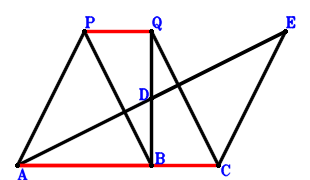
Answer：
\(\because \) D is the midpoint of QB \(\therefore \small\overrightarrow{BD}=\dfrac{\small\overrightarrow{BQ}}{2}\).\(\because \) D is the midpoint of AE \(\therefore \small\overrightarrow{BE}=- \small\overrightarrow{BA} + 2 \small\overrightarrow{BD}=- \small\overrightarrow{BA} + \small\overrightarrow{BQ}\).\(\because \) QC=CE \(\therefore - \small\overrightarrow{EC}^{2} + \small\overrightarrow{QC}^{2}=- \left(\small\overrightarrow{BC} - \small\overrightarrow{BE}\right)^{2} + \left(\small\overrightarrow{BC} - \small\overrightarrow{BQ}\right)^{2}=\left(\small\overrightarrow{BC} - \small\overrightarrow{BQ}\right)^{2} - \left(\small\overrightarrow{BA} + \small\overrightarrow{BC} - \small\overrightarrow{BQ}\right)^{2}=- \small\overrightarrow{BA}^{2} - 2 \small\overrightarrow{BA} \cdot \small\overrightarrow{BC} + 2 \small\overrightarrow{BA} \cdot \small\overrightarrow{BQ}=0\) . . . . . . \(①\)\(\because \) AP=PB \(\therefore - \small\overrightarrow{BP}^{2} + \small\overrightarrow{PA}^{2}=- \small\overrightarrow{BP}^{2} + \left(\small\overrightarrow{BA} - \small\overrightarrow{BP}\right)^{2}=\small\overrightarrow{BA}^{2} - 2 \small\overrightarrow{BA} \cdot \small\overrightarrow{BP}=0\) . . . . . . \(②\)In conclusion, \(\small\overrightarrow{AB} \cdot \small\overrightarrow{CB} - \small\overrightarrow{AB} \cdot \small\overrightarrow{QP}=\small\overrightarrow{BA} \cdot \small\overrightarrow{BC} + \small\overrightarrow{BA} \cdot \left(\small\overrightarrow{BP} - \small\overrightarrow{BQ}\right)=\small\overrightarrow{BA} \cdot \small\overrightarrow{BC} + \small\overrightarrow{BA} \cdot \small\overrightarrow{BP} - \small\overrightarrow{BA} \cdot \small\overrightarrow{BQ}=-1/2\cdot①-1/2\cdot②=0\)\(\because\) A, B, C are collinear and AB//PQ \(\therefore\) \(AB·PQ=AB·BC\).
Exercise 432： Let F be the midpoint of QG and CP. D is the midpoint of EB and AC. AP=PB and QC=EQ. Prove that AB⊥BG.
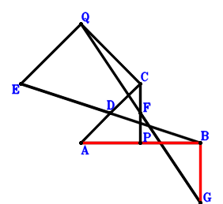
Answer：
\(\because \) D is the midpoint of AC \(\therefore \small\overrightarrow{BD}=\dfrac{\small\overrightarrow{BA}}{2} + \dfrac{\small\overrightarrow{BC}}{2}\).\(\because \) D is the midpoint of EB \(\therefore \small\overrightarrow{BE}=2 \small\overrightarrow{BD}=\small\overrightarrow{BA} + \small\overrightarrow{BC}\).\(\because \) F is the midpoint of CP \(\therefore \small\overrightarrow{BF}=\dfrac{\small\overrightarrow{BC}}{2} + \dfrac{\small\overrightarrow{BP}}{2}\).\(\because \) F is the midpoint of QG \(\therefore \small\overrightarrow{BG}=2 \small\overrightarrow{BF} - \small\overrightarrow{BQ}=\small\overrightarrow{BC} + \small\overrightarrow{BP} - \small\overrightarrow{BQ}\).\(\because \) QC=EQ \(\therefore \small\overrightarrow{QC}^{2} - \small\overrightarrow{QE}^{2}=\left(\small\overrightarrow{BC} - \small\overrightarrow{BQ}\right)^{2} - \left(\small\overrightarrow{BE} - \small\overrightarrow{BQ}\right)^{2}=\left(\small\overrightarrow{BC} - \small\overrightarrow{BQ}\right)^{2} - \left(\small\overrightarrow{BA} + \small\overrightarrow{BC} - \small\overrightarrow{BQ}\right)^{2}=- \small\overrightarrow{BA}^{2} - 2 \small\overrightarrow{BA} \cdot \small\overrightarrow{BC} + 2 \small\overrightarrow{BA} \cdot \small\overrightarrow{BQ}=0\) . . . . . . \(①\)\(\because \) AP=PB \(\therefore - \small\overrightarrow{BP}^{2} + \small\overrightarrow{PA}^{2}=- \small\overrightarrow{BP}^{2} + \left(\small\overrightarrow{BA} - \small\overrightarrow{BP}\right)^{2}=\small\overrightarrow{BA}^{2} - 2 \small\overrightarrow{BA} \cdot \small\overrightarrow{BP}=0\) . . . . . . \(②\)In conclusion, \(\small\overrightarrow{BA} \cdot \small\overrightarrow{BG}=\small\overrightarrow{BA} \cdot \left(\small\overrightarrow{BC} + \small\overrightarrow{BP} - \small\overrightarrow{BQ}\right)=\small\overrightarrow{BA} \cdot \small\overrightarrow{BC} + \small\overrightarrow{BA} \cdot \small\overrightarrow{BP} - \small\overrightarrow{BA} \cdot \small\overrightarrow{BQ}=-1/2\cdot①-1/2\cdot②=0\), that is, AB⊥BG.
Exercise 441： Let FPQC be a parallelogram. D, E are the midpoints of QB, AC, respectively. PA=PB and QC=2ED. Prove that AB⊥BF.
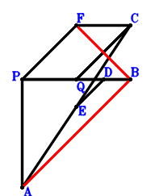
Answer：
\(\because \) D is the midpoint of QB \(\therefore \small\overrightarrow{BD}=\dfrac{\small\overrightarrow{BQ}}{2}\).\(\because \) E is the midpoint of AC \(\therefore \small\overrightarrow{BE}=\dfrac{\small\overrightarrow{BA}}{2} + \dfrac{\small\overrightarrow{BC}}{2}\).\(\because \) FPQC is a parallelogram \(\therefore \small\overrightarrow{BF}=\small\overrightarrow{BC} + \small\overrightarrow{BP} - \small\overrightarrow{BQ}\).\(\because \) PA=PB \(\therefore - \small\overrightarrow{BP}^{2} + \small\overrightarrow{PA}^{2}=- \small\overrightarrow{BP}^{2} + \left(\small\overrightarrow{BA} - \small\overrightarrow{BP}\right)^{2}=\small\overrightarrow{BA}^{2} - 2 \small\overrightarrow{BA} \cdot \small\overrightarrow{BP}=0\) . . . . . . \(①\)\(\because \) QC=2ED \(\therefore - 4 \small\overrightarrow{DE}^{2} + \small\overrightarrow{QC}^{2}=\left(\small\overrightarrow{BC} - \small\overrightarrow{BQ}\right)^{2} - 4 \left(- \small\overrightarrow{BD} + \small\overrightarrow{BE}\right)^{2}=\left(\small\overrightarrow{BC} - \small\overrightarrow{BQ}\right)^{2} - 4 \left(\dfrac{\small\overrightarrow{BA}}{2} + \dfrac{\small\overrightarrow{BC}}{2} - \dfrac{\small\overrightarrow{BQ}}{2}\right)^{2}=- \small\overrightarrow{BA}^{2} - 2 \small\overrightarrow{BA} \cdot \small\overrightarrow{BC} + 2 \small\overrightarrow{BA} \cdot \small\overrightarrow{BQ}=0\) . . . . . . \(②\)In conclusion, \(\small\overrightarrow{BA} \cdot \small\overrightarrow{BF}=\small\overrightarrow{BA} \cdot \left(\small\overrightarrow{BC} + \small\overrightarrow{BP} - \small\overrightarrow{BQ}\right)=\small\overrightarrow{BA} \cdot \small\overrightarrow{BC} + \small\overrightarrow{BA} \cdot \small\overrightarrow{BP} - \small\overrightarrow{BA} \cdot \small\overrightarrow{BQ}=-1/2\cdot①-1/2\cdot②=0\), that is, AB⊥BF.
Exercise 469： Let DBAQ be a parallelogram. E, F are the midpoints of PC, BQ, respectively. QC=BP and PA=DC. Prove that BA⊥FE.
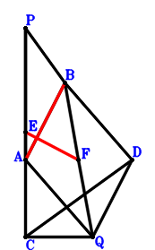
Answer：
\(\because \) DBAQ is a parallelogram \(\therefore \small\overrightarrow{BD}=- \small\overrightarrow{BA} + \small\overrightarrow{BQ}\).\(\because \) E is the midpoint of PC \(\therefore \small\overrightarrow{BE}=\dfrac{\small\overrightarrow{BC}}{2} + \dfrac{\small\overrightarrow{BP}}{2}\).\(\because \) F is the midpoint of BQ \(\therefore \small\overrightarrow{BF}=\dfrac{\small\overrightarrow{BQ}}{2}\).\(\because \) QC=BP \(\therefore - \small\overrightarrow{BP}^{2} + \small\overrightarrow{QC}^{2}=- \small\overrightarrow{BP}^{2} + \left(\small\overrightarrow{BC} - \small\overrightarrow{BQ}\right)^{2}=\small\overrightarrow{BC}^{2} - 2 \small\overrightarrow{BC} \cdot \small\overrightarrow{BQ} - \small\overrightarrow{BP}^{2} + \small\overrightarrow{BQ}^{2}=0\) . . . . . . \(①\)\(\because \) PA=DC \(\therefore - \small\overrightarrow{DC}^{2} + \small\overrightarrow{PA}^{2}=\left(\small\overrightarrow{BA} - \small\overrightarrow{BP}\right)^{2} - \left(\small\overrightarrow{BC} - \small\overrightarrow{BD}\right)^{2}=\left(\small\overrightarrow{BA} - \small\overrightarrow{BP}\right)^{2} - \left(\small\overrightarrow{BA} + \small\overrightarrow{BC} - \small\overrightarrow{BQ}\right)^{2}=- 2 \small\overrightarrow{BA} \cdot \small\overrightarrow{BC} - 2 \small\overrightarrow{BA} \cdot \small\overrightarrow{BP} + 2 \small\overrightarrow{BA} \cdot \small\overrightarrow{BQ} - \small\overrightarrow{BC}^{2} + 2 \small\overrightarrow{BC} \cdot \small\overrightarrow{BQ} + \small\overrightarrow{BP}^{2} - \small\overrightarrow{BQ}^{2}=0\) . . . . . . \(②\)In conclusion, \(\small\overrightarrow{AB} \cdot \small\overrightarrow{EF}=- \small\overrightarrow{BA} \cdot \left(- \small\overrightarrow{BE} + \small\overrightarrow{BF}\right)=- \small\overrightarrow{BA} \cdot \left(- \dfrac{\small\overrightarrow{BC}}{2} - \dfrac{\small\overrightarrow{BP}}{2} + \dfrac{\small\overrightarrow{BQ}}{2}\right)=\dfrac{\small\overrightarrow{BA} \cdot \small\overrightarrow{BC}}{2} + \dfrac{\small\overrightarrow{BA} \cdot \small\overrightarrow{BP}}{2} - \dfrac{\small\overrightarrow{BA} \cdot \small\overrightarrow{BQ}}{2}=-1/4\cdot①-1/4\cdot②=0\), that is, BA⊥FE.
Exercise 497： Let F be the midpoint of PC and BG. D is the midpoint of EC and BQ. QC=PB and PA=EA. Prove that BA⊥GQ.
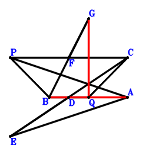
Answer：
\(\because \) D is the midpoint of BQ \(\therefore \small\overrightarrow{BD}=\dfrac{\small\overrightarrow{BQ}}{2}\).\(\because \) D is the midpoint of EC \(\therefore \small\overrightarrow{BE}=- \small\overrightarrow{BC} + 2 \small\overrightarrow{BD}=- \small\overrightarrow{BC} + \small\overrightarrow{BQ}\).\(\because \) F is the midpoint of PC \(\therefore \small\overrightarrow{BF}=\dfrac{\small\overrightarrow{BC}}{2} + \dfrac{\small\overrightarrow{BP}}{2}\).\(\because \) F is the midpoint of BG \(\therefore \small\overrightarrow{BG}=2 \small\overrightarrow{BF}=\small\overrightarrow{BC} + \small\overrightarrow{BP}\).\(\because \) PA=EA \(\therefore - \small\overrightarrow{EA}^{2} + \small\overrightarrow{PA}^{2}=- \left(\small\overrightarrow{BA} - \small\overrightarrow{BE}\right)^{2} + \left(\small\overrightarrow{BA} - \small\overrightarrow{BP}\right)^{2}=\left(\small\overrightarrow{BA} - \small\overrightarrow{BP}\right)^{2} - \left(\small\overrightarrow{BA} + \small\overrightarrow{BC} - \small\overrightarrow{BQ}\right)^{2}=- 2 \small\overrightarrow{BA} \cdot \small\overrightarrow{BC} - 2 \small\overrightarrow{BA} \cdot \small\overrightarrow{BP} + 2 \small\overrightarrow{BA} \cdot \small\overrightarrow{BQ} - \small\overrightarrow{BC}^{2} + 2 \small\overrightarrow{BC} \cdot \small\overrightarrow{BQ} + \small\overrightarrow{BP}^{2} - \small\overrightarrow{BQ}^{2}=0\) . . . . . . \(①\)\(\because \) QC=PB \(\therefore - \small\overrightarrow{BP}^{2} + \small\overrightarrow{QC}^{2}=- \small\overrightarrow{BP}^{2} + \left(\small\overrightarrow{BC} - \small\overrightarrow{BQ}\right)^{2}=\small\overrightarrow{BC}^{2} - 2 \small\overrightarrow{BC} \cdot \small\overrightarrow{BQ} - \small\overrightarrow{BP}^{2} + \small\overrightarrow{BQ}^{2}=0\) . . . . . . \(②\)In conclusion, \(\small\overrightarrow{AB} \cdot \small\overrightarrow{GQ}=- \small\overrightarrow{BA} \cdot \left(- \small\overrightarrow{BG} + \small\overrightarrow{BQ}\right)=- \small\overrightarrow{BA} \cdot \left(- \small\overrightarrow{BC} - \small\overrightarrow{BP} + \small\overrightarrow{BQ}\right)=\small\overrightarrow{BA} \cdot \small\overrightarrow{BC} + \small\overrightarrow{BA} \cdot \small\overrightarrow{BP} - \small\overrightarrow{BA} \cdot \small\overrightarrow{BQ}=-1/2\cdot①-1/2\cdot②=0\), that is, BA⊥GQ.
Exercise 505： Let QCBF be a parallelogram. D is the midpoint of QB and EA. PA=EC and QC=BP. Prove that FP⊥BA.
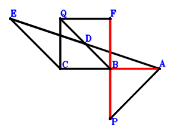
Answer：
\(\because \) D is the midpoint of QB \(\therefore \small\overrightarrow{BD}=\dfrac{\small\overrightarrow{BQ}}{2}\).\(\because \) D is the midpoint of EA \(\therefore \small\overrightarrow{BE}=- \small\overrightarrow{BA} + 2 \small\overrightarrow{BD}=- \small\overrightarrow{BA} + \small\overrightarrow{BQ}\).\(\because \) QCBF is a parallelogram \(\therefore \small\overrightarrow{BF}=- \small\overrightarrow{BC} + \small\overrightarrow{BQ}\).\(\because \) QC=BP \(\therefore - \small\overrightarrow{BP}^{2} + \small\overrightarrow{QC}^{2}=- \small\overrightarrow{BP}^{2} + \left(\small\overrightarrow{BC} - \small\overrightarrow{BQ}\right)^{2}=\small\overrightarrow{BC}^{2} - 2 \small\overrightarrow{BC} \cdot \small\overrightarrow{BQ} - \small\overrightarrow{BP}^{2} + \small\overrightarrow{BQ}^{2}=0\) . . . . . . \(①\)\(\because \) PA=EC \(\therefore - \small\overrightarrow{EC}^{2} + \small\overrightarrow{PA}^{2}=\left(\small\overrightarrow{BA} - \small\overrightarrow{BP}\right)^{2} - \left(\small\overrightarrow{BC} - \small\overrightarrow{BE}\right)^{2}=\left(\small\overrightarrow{BA} - \small\overrightarrow{BP}\right)^{2} - \left(\small\overrightarrow{BA} + \small\overrightarrow{BC} - \small\overrightarrow{BQ}\right)^{2}=- 2 \small\overrightarrow{BA} \cdot \small\overrightarrow{BC} - 2 \small\overrightarrow{BA} \cdot \small\overrightarrow{BP} + 2 \small\overrightarrow{BA} \cdot \small\overrightarrow{BQ} - \small\overrightarrow{BC}^{2} + 2 \small\overrightarrow{BC} \cdot \small\overrightarrow{BQ} + \small\overrightarrow{BP}^{2} - \small\overrightarrow{BQ}^{2}=0\) . . . . . . \(②\)In conclusion, \(\small\overrightarrow{AB} \cdot \small\overrightarrow{PF}=- \small\overrightarrow{BA} \cdot \left(\small\overrightarrow{BF} - \small\overrightarrow{BP}\right)=- \small\overrightarrow{BA} \cdot \left(- \small\overrightarrow{BC} - \small\overrightarrow{BP} + \small\overrightarrow{BQ}\right)=\small\overrightarrow{BA} \cdot \small\overrightarrow{BC} + \small\overrightarrow{BA} \cdot \small\overrightarrow{BP} - \small\overrightarrow{BA} \cdot \small\overrightarrow{BQ}=-1/2\cdot①-1/2\cdot②=0\), that is, FP⊥BA.
Exercise 508： Let D be the midpoint of QB,AE and CF. QC=BP and AP=CE. Prove that FP⊥AB.
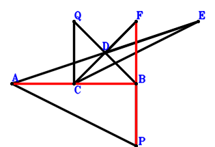
Answer：
\(\because \) D is the midpoint of QB \(\therefore \small\overrightarrow{BD}=\dfrac{\small\overrightarrow{BQ}}{2}\).\(\because \) D is the midpoint of AE \(\therefore \small\overrightarrow{BE}=- \small\overrightarrow{BA} + 2 \small\overrightarrow{BD}=- \small\overrightarrow{BA} + \small\overrightarrow{BQ}\).\(\because \) D is the midpoint of CF \(\therefore \small\overrightarrow{BF}=- \small\overrightarrow{BC} + 2 \small\overrightarrow{BD}=- \small\overrightarrow{BC} + \small\overrightarrow{BQ}\).\(\because \) QC=BP \(\therefore - \small\overrightarrow{BP}^{2} + \small\overrightarrow{QC}^{2}=- \small\overrightarrow{BP}^{2} + \left(\small\overrightarrow{BC} - \small\overrightarrow{BQ}\right)^{2}=\small\overrightarrow{BC}^{2} - 2 \small\overrightarrow{BC} \cdot \small\overrightarrow{BQ} - \small\overrightarrow{BP}^{2} + \small\overrightarrow{BQ}^{2}=0\) . . . . . . \(①\)\(\because \) AP=CE \(\therefore - \small\overrightarrow{EC}^{2} + \small\overrightarrow{PA}^{2}=\left(\small\overrightarrow{BA} - \small\overrightarrow{BP}\right)^{2} - \left(\small\overrightarrow{BC} - \small\overrightarrow{BE}\right)^{2}=\left(\small\overrightarrow{BA} - \small\overrightarrow{BP}\right)^{2} - \left(\small\overrightarrow{BA} + \small\overrightarrow{BC} - \small\overrightarrow{BQ}\right)^{2}=- 2 \small\overrightarrow{BA} \cdot \small\overrightarrow{BC} - 2 \small\overrightarrow{BA} \cdot \small\overrightarrow{BP} + 2 \small\overrightarrow{BA} \cdot \small\overrightarrow{BQ} - \small\overrightarrow{BC}^{2} + 2 \small\overrightarrow{BC} \cdot \small\overrightarrow{BQ} + \small\overrightarrow{BP}^{2} - \small\overrightarrow{BQ}^{2}=0\) . . . . . . \(②\)In conclusion, \(\small\overrightarrow{AB} \cdot \small\overrightarrow{PF}=- \small\overrightarrow{BA} \cdot \left(\small\overrightarrow{BF} - \small\overrightarrow{BP}\right)=- \small\overrightarrow{BA} \cdot \left(- \small\overrightarrow{BC} - \small\overrightarrow{BP} + \small\overrightarrow{BQ}\right)=\small\overrightarrow{BA} \cdot \small\overrightarrow{BC} + \small\overrightarrow{BA} \cdot \small\overrightarrow{BP} - \small\overrightarrow{BA} \cdot \small\overrightarrow{BQ}=-1/2\cdot①-1/2\cdot②=0\), that is, FP⊥AB.
Exercise 532： Let D, E be the midpoints of QB, CA, respectively. F is the midpoint of QG and CP. QC=BP and AP=2DE. Prove that AB⊥BG.
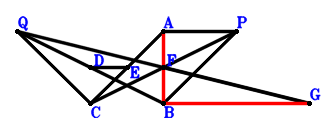
Answer：
\(\because \) D is the midpoint of QB \(\therefore \small\overrightarrow{BD}=\dfrac{\small\overrightarrow{BQ}}{2}\).\(\because \) E is the midpoint of CA \(\therefore \small\overrightarrow{BE}=\dfrac{\small\overrightarrow{BA}}{2} + \dfrac{\small\overrightarrow{BC}}{2}\).\(\because \) F is the midpoint of CP \(\therefore \small\overrightarrow{BF}=\dfrac{\small\overrightarrow{BC}}{2} + \dfrac{\small\overrightarrow{BP}}{2}\).\(\because \) F is the midpoint of QG \(\therefore \small\overrightarrow{BG}=2 \small\overrightarrow{BF} - \small\overrightarrow{BQ}=\small\overrightarrow{BC} + \small\overrightarrow{BP} - \small\overrightarrow{BQ}\).\(\because \) QC=BP \(\therefore - \small\overrightarrow{BP}^{2} + \small\overrightarrow{QC}^{2}=- \small\overrightarrow{BP}^{2} + \left(\small\overrightarrow{BC} - \small\overrightarrow{BQ}\right)^{2}=\small\overrightarrow{BC}^{2} - 2 \small\overrightarrow{BC} \cdot \small\overrightarrow{BQ} - \small\overrightarrow{BP}^{2} + \small\overrightarrow{BQ}^{2}=0\) . . . . . . \(①\)\(\because \) AP=2DE \(\therefore - 4 \small\overrightarrow{DE}^{2} + \small\overrightarrow{PA}^{2}=\left(\small\overrightarrow{BA} - \small\overrightarrow{BP}\right)^{2} - 4 \left(- \small\overrightarrow{BD} + \small\overrightarrow{BE}\right)^{2}=\left(\small\overrightarrow{BA} - \small\overrightarrow{BP}\right)^{2} - 4 \left(\dfrac{\small\overrightarrow{BA}}{2} + \dfrac{\small\overrightarrow{BC}}{2} - \dfrac{\small\overrightarrow{BQ}}{2}\right)^{2}=- 2 \small\overrightarrow{BA} \cdot \small\overrightarrow{BC} - 2 \small\overrightarrow{BA} \cdot \small\overrightarrow{BP} + 2 \small\overrightarrow{BA} \cdot \small\overrightarrow{BQ} - \small\overrightarrow{BC}^{2} + 2 \small\overrightarrow{BC} \cdot \small\overrightarrow{BQ} + \small\overrightarrow{BP}^{2} - \small\overrightarrow{BQ}^{2}=0\) . . . . . . \(②\)In conclusion, \(\small\overrightarrow{BA} \cdot \small\overrightarrow{BG}=\small\overrightarrow{BA} \cdot \left(\small\overrightarrow{BC} + \small\overrightarrow{BP} - \small\overrightarrow{BQ}\right)=\small\overrightarrow{BA} \cdot \small\overrightarrow{BC} + \small\overrightarrow{BA} \cdot \small\overrightarrow{BP} - \small\overrightarrow{BA} \cdot \small\overrightarrow{BQ}=-1/2\cdot①-1/2\cdot②=0\), that is, AB⊥BG.
Exercise 543： Let D be the midpoint of AC and EQ. CQ=BP and AP=EB. Given that A, C, B are collinear and AB//QP, prove that \(AB·QP=AB·CB\).
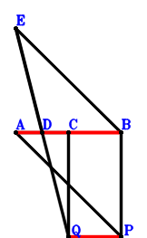
Answer：
\(\because \) D is the midpoint of AC \(\therefore \small\overrightarrow{BD}=\dfrac{\small\overrightarrow{BA}}{2} + \dfrac{\small\overrightarrow{BC}}{2}\).\(\because \) D is the midpoint of EQ \(\therefore \small\overrightarrow{BE}=2 \small\overrightarrow{BD} - \small\overrightarrow{BQ}=\small\overrightarrow{BA} + \small\overrightarrow{BC} - \small\overrightarrow{BQ}\).\(\because \) CQ=BP \(\therefore - \small\overrightarrow{BP}^{2} + \small\overrightarrow{QC}^{2}=- \small\overrightarrow{BP}^{2} + \left(\small\overrightarrow{BC} - \small\overrightarrow{BQ}\right)^{2}=\small\overrightarrow{BC}^{2} - 2 \small\overrightarrow{BC} \cdot \small\overrightarrow{BQ} - \small\overrightarrow{BP}^{2} + \small\overrightarrow{BQ}^{2}=0\) . . . . . . \(①\)\(\because \) AP=EB \(\therefore - \small\overrightarrow{BE}^{2} + \small\overrightarrow{PA}^{2}=- \small\overrightarrow{BE}^{2} + \left(\small\overrightarrow{BA} - \small\overrightarrow{BP}\right)^{2}=\left(\small\overrightarrow{BA} - \small\overrightarrow{BP}\right)^{2} - \left(\small\overrightarrow{BA} + \small\overrightarrow{BC} - \small\overrightarrow{BQ}\right)^{2}=- 2 \small\overrightarrow{BA} \cdot \small\overrightarrow{BC} - 2 \small\overrightarrow{BA} \cdot \small\overrightarrow{BP} + 2 \small\overrightarrow{BA} \cdot \small\overrightarrow{BQ} - \small\overrightarrow{BC}^{2} + 2 \small\overrightarrow{BC} \cdot \small\overrightarrow{BQ} + \small\overrightarrow{BP}^{2} - \small\overrightarrow{BQ}^{2}=0\) . . . . . . \(②\)In conclusion, \(\small\overrightarrow{AB} \cdot \small\overrightarrow{CB} - \small\overrightarrow{AB} \cdot \small\overrightarrow{QP}=\small\overrightarrow{BA} \cdot \small\overrightarrow{BC} + \small\overrightarrow{BA} \cdot \left(\small\overrightarrow{BP} - \small\overrightarrow{BQ}\right)=\small\overrightarrow{BA} \cdot \small\overrightarrow{BC} + \small\overrightarrow{BA} \cdot \small\overrightarrow{BP} - \small\overrightarrow{BA} \cdot \small\overrightarrow{BQ}=-1/2\cdot①-1/2\cdot②=0\)\(\because\) A, C, B are collinear and AB//QP \(\therefore\) \(AB·QP=AB·CB\).
Exercise 553： Let QCBD be a parallelogram. AP=PB. AB//QP and \(CQ^{2}=2 AB \cdot QP\). Given that C, A, B are collinear, prove that \(AD^{2}=2 AB \cdot CB\).
Answer：
\(\because \) QCBD is a parallelogram \(\therefore \small\overrightarrow{BD}=- \small\overrightarrow{BC} + \small\overrightarrow{BQ}\).\(\because \) AP=PB \(\therefore - \small\overrightarrow{BP}^{2} + \small\overrightarrow{PA}^{2}=- \small\overrightarrow{BP}^{2} + \left(\small\overrightarrow{BA} - \small\overrightarrow{BP}\right)^{2}=\small\overrightarrow{BA}^{2} - 2 \small\overrightarrow{BA} \cdot \small\overrightarrow{BP}=0\) . . . . . . \(①\)\(\because \) AB//QP and \(CQ^{2}=2 AB \cdot QP\) \(\therefore - 2 \small\overrightarrow{AB} \cdot \small\overrightarrow{QP} + \small\overrightarrow{QC}^{2}=2 \small\overrightarrow{BA} \cdot \left(\small\overrightarrow{BP} - \small\overrightarrow{BQ}\right) + \left(\small\overrightarrow{BC} - \small\overrightarrow{BQ}\right)^{2}=2 \small\overrightarrow{BA} \cdot \small\overrightarrow{BP} - 2 \small\overrightarrow{BA} \cdot \small\overrightarrow{BQ} + \small\overrightarrow{BC}^{2} - 2 \small\overrightarrow{BC} \cdot \small\overrightarrow{BQ} + \small\overrightarrow{BQ}^{2}=0\) . . . . . . \(②\)In conclusion, \(2 \small\overrightarrow{AB} \cdot \small\overrightarrow{CB} - \small\overrightarrow{DA}^{2}=2 \small\overrightarrow{BA} \cdot \small\overrightarrow{BC} - \left(\small\overrightarrow{BA} - \small\overrightarrow{BD}\right)^{2}=2 \small\overrightarrow{BA} \cdot \small\overrightarrow{BC} - \left(\small\overrightarrow{BA} + \small\overrightarrow{BC} - \small\overrightarrow{BQ}\right)^{2}=- \small\overrightarrow{BA}^{2} + 2 \small\overrightarrow{BA} \cdot \small\overrightarrow{BQ} - \small\overrightarrow{BC}^{2} + 2 \small\overrightarrow{BC} \cdot \small\overrightarrow{BQ} - \small\overrightarrow{BQ}^{2}=-①-②=0\)\(\because\) C, A, B are collinear \(\therefore\) \(AD^{2}=2 AB \cdot CB\).
Exercise 570： Let D be the midpoint of AC and QE. AP=BE. A, B, C are collinear and \(QC^{2}=2 AB \cdot BC\). Given that AB//PQ, prove that \(PB^{2}=2 AB \cdot PQ\).
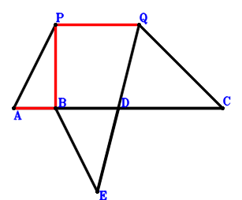
Answer：
\(\because \) D is the midpoint of AC \(\therefore \small\overrightarrow{BD}=\dfrac{\small\overrightarrow{BA}}{2} + \dfrac{\small\overrightarrow{BC}}{2}\).\(\because \) D is the midpoint of QE \(\therefore \small\overrightarrow{BE}=2 \small\overrightarrow{BD} - \small\overrightarrow{BQ}=\small\overrightarrow{BA} + \small\overrightarrow{BC} - \small\overrightarrow{BQ}\).\(\because \) AP=BE \(\therefore - \small\overrightarrow{BE}^{2} + \small\overrightarrow{PA}^{2}=- \small\overrightarrow{BE}^{2} + \left(\small\overrightarrow{BA} - \small\overrightarrow{BP}\right)^{2}=\left(\small\overrightarrow{BA} - \small\overrightarrow{BP}\right)^{2} - \left(\small\overrightarrow{BA} + \small\overrightarrow{BC} - \small\overrightarrow{BQ}\right)^{2}=- 2 \small\overrightarrow{BA} \cdot \small\overrightarrow{BC} - 2 \small\overrightarrow{BA} \cdot \small\overrightarrow{BP} + 2 \small\overrightarrow{BA} \cdot \small\overrightarrow{BQ} - \small\overrightarrow{BC}^{2} + 2 \small\overrightarrow{BC} \cdot \small\overrightarrow{BQ} + \small\overrightarrow{BP}^{2} - \small\overrightarrow{BQ}^{2}=0\) . . . . . . \(①\)\(\because \) A, B, C are collinear and \(QC^{2}=2 AB \cdot BC\) \(\therefore 2 \small\overrightarrow{AB} \cdot \small\overrightarrow{CB} + \small\overrightarrow{QC}^{2}=2 \small\overrightarrow{BA} \cdot \small\overrightarrow{BC} + \left(\small\overrightarrow{BC} - \small\overrightarrow{BQ}\right)^{2}=2 \small\overrightarrow{BA} \cdot \small\overrightarrow{BC} + \small\overrightarrow{BC}^{2} - 2 \small\overrightarrow{BC} \cdot \small\overrightarrow{BQ} + \small\overrightarrow{BQ}^{2}=0\) . . . . . . \(②\)In conclusion, \(- 2 \small\overrightarrow{AB} \cdot \small\overrightarrow{QP} - \small\overrightarrow{BP}^{2}=2 \small\overrightarrow{BA} \cdot \left(\small\overrightarrow{BP} - \small\overrightarrow{BQ}\right) - \small\overrightarrow{BP}^{2}=2 \small\overrightarrow{BA} \cdot \small\overrightarrow{BP} - 2 \small\overrightarrow{BA} \cdot \small\overrightarrow{BQ} - \small\overrightarrow{BP}^{2}=-①-②=0\)\(\because\) AB//PQ \(\therefore\) \(PB^{2}=2 AB \cdot PQ\).
Exercise 584： Let D be the midpoint of QB and CE. CQ=PB. C, B, A are collinear and \(PA^{2}=2 BA \cdot CB\). Given that BA//QP, prove that \(EA^{2}=2 BA \cdot QP\).
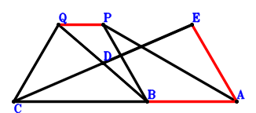
Answer：
\(\because \) D is the midpoint of QB \(\therefore \small\overrightarrow{BD}=\dfrac{\small\overrightarrow{BQ}}{2}\).\(\because \) D is the midpoint of CE \(\therefore \small\overrightarrow{BE}=- \small\overrightarrow{BC} + 2 \small\overrightarrow{BD}=- \small\overrightarrow{BC} + \small\overrightarrow{BQ}\).\(\because \) CQ=PB \(\therefore - \small\overrightarrow{BP}^{2} + \small\overrightarrow{QC}^{2}=- \small\overrightarrow{BP}^{2} + \left(\small\overrightarrow{BC} - \small\overrightarrow{BQ}\right)^{2}=\small\overrightarrow{BC}^{2} - 2 \small\overrightarrow{BC} \cdot \small\overrightarrow{BQ} - \small\overrightarrow{BP}^{2} + \small\overrightarrow{BQ}^{2}=0\) . . . . . . \(①\)\(\because \) C, B, A are collinear and \(PA^{2}=2 BA \cdot CB\) \(\therefore 2 \small\overrightarrow{AB} \cdot \small\overrightarrow{CB} + \small\overrightarrow{PA}^{2}=2 \small\overrightarrow{BA} \cdot \small\overrightarrow{BC} + \left(\small\overrightarrow{BA} - \small\overrightarrow{BP}\right)^{2}=\small\overrightarrow{BA}^{2} + 2 \small\overrightarrow{BA} \cdot \small\overrightarrow{BC} - 2 \small\overrightarrow{BA} \cdot \small\overrightarrow{BP} + \small\overrightarrow{BP}^{2}=0\) . . . . . . \(②\)In conclusion, \(- 2 \small\overrightarrow{AB} \cdot \small\overrightarrow{QP} - \small\overrightarrow{EA}^{2}=2 \small\overrightarrow{BA} \cdot \left(\small\overrightarrow{BP} - \small\overrightarrow{BQ}\right) - \left(\small\overrightarrow{BA} - \small\overrightarrow{BE}\right)^{2}=2 \small\overrightarrow{BA} \cdot \left(\small\overrightarrow{BP} - \small\overrightarrow{BQ}\right) - \left(\small\overrightarrow{BA} + \small\overrightarrow{BC} - \small\overrightarrow{BQ}\right)^{2}=- \small\overrightarrow{BA}^{2} - 2 \small\overrightarrow{BA} \cdot \small\overrightarrow{BC} + 2 \small\overrightarrow{BA} \cdot \small\overrightarrow{BP} - \small\overrightarrow{BC}^{2} + 2 \small\overrightarrow{BC} \cdot \small\overrightarrow{BQ} - \small\overrightarrow{BQ}^{2}=-①-②=0\)\(\because\) BA//QP \(\therefore\) \(EA^{2}=2 BA \cdot QP\).
Exercise 610： Let QADC be a parallelogram. QC=DB. AB//QP and \(AP^{2}=2 AB \cdot QP\). Given that A, C, B are collinear, prove that \(BP^{2}=2 AB \cdot CB\).
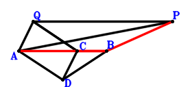
Answer：
\(\because \) QADC is a parallelogram \(\therefore \small\overrightarrow{BD}=\small\overrightarrow{BA} + \small\overrightarrow{BC} - \small\overrightarrow{BQ}\).\(\because \) QC=DB \(\therefore - \small\overrightarrow{BD}^{2} + \small\overrightarrow{QC}^{2}=- \small\overrightarrow{BD}^{2} + \left(\small\overrightarrow{BC} - \small\overrightarrow{BQ}\right)^{2}=\left(\small\overrightarrow{BC} - \small\overrightarrow{BQ}\right)^{2} - \left(\small\overrightarrow{BA} + \small\overrightarrow{BC} - \small\overrightarrow{BQ}\right)^{2}=- \small\overrightarrow{BA}^{2} - 2 \small\overrightarrow{BA} \cdot \small\overrightarrow{BC} + 2 \small\overrightarrow{BA} \cdot \small\overrightarrow{BQ}=0\) . . . . . . \(①\)\(\because \) AB//QP and \(AP^{2}=2 AB \cdot QP\) \(\therefore - 2 \small\overrightarrow{AB} \cdot \small\overrightarrow{QP} + \small\overrightarrow{PA}^{2}=2 \small\overrightarrow{BA} \cdot \left(\small\overrightarrow{BP} - \small\overrightarrow{BQ}\right) + \left(\small\overrightarrow{BA} - \small\overrightarrow{BP}\right)^{2}=\small\overrightarrow{BA}^{2} - 2 \small\overrightarrow{BA} \cdot \small\overrightarrow{BQ} + \small\overrightarrow{BP}^{2}=0\) . . . . . . \(②\)In conclusion, \(2 \small\overrightarrow{BA} \cdot \small\overrightarrow{BC} - \small\overrightarrow{BP}^{2}=-①-②=0\)\(\because\) A, C, B are collinear \(\therefore\) \(BP^{2}=2 AB \cdot CB\).
Exercise 618： Let ADCB be a rectangle. QC=DQ and AP=PB. Prove that AB⊥QP.
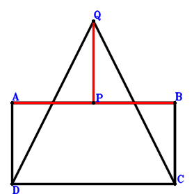
Answer：
\(\because \) ADCB is a parallelogram \(\therefore \small\overrightarrow{BD}=\small\overrightarrow{BA} + \small\overrightarrow{BC}\).\(\because \) QC=DQ \(\therefore \small\overrightarrow{QC}^{2} - \small\overrightarrow{QD}^{2}=\left(\small\overrightarrow{BC} - \small\overrightarrow{BQ}\right)^{2} - \left(\small\overrightarrow{BD} - \small\overrightarrow{BQ}\right)^{2}=\left(\small\overrightarrow{BC} - \small\overrightarrow{BQ}\right)^{2} - \left(\small\overrightarrow{BA} + \small\overrightarrow{BC} - \small\overrightarrow{BQ}\right)^{2}=- \small\overrightarrow{BA}^{2} - 2 \small\overrightarrow{BA} \cdot \small\overrightarrow{BC} + 2 \small\overrightarrow{BA} \cdot \small\overrightarrow{BQ}=0\) . . . . . . \(①\)\(\because \) AP=PB \(\therefore - \small\overrightarrow{BP}^{2} + \small\overrightarrow{PA}^{2}=- \small\overrightarrow{BP}^{2} + \left(\small\overrightarrow{BA} - \small\overrightarrow{BP}\right)^{2}=\small\overrightarrow{BA}^{2} - 2 \small\overrightarrow{BA} \cdot \small\overrightarrow{BP}=0\) . . . . . . \(②\)\(\because \) AB⊥BC \(\therefore \small\overrightarrow{BA} \cdot \small\overrightarrow{BC}=0\) . . . . . . \(③\)In conclusion, \(\small\overrightarrow{AB} \cdot \small\overrightarrow{QP}=- \small\overrightarrow{BA} \cdot \left(\small\overrightarrow{BP} - \small\overrightarrow{BQ}\right)=- \small\overrightarrow{BA} \cdot \small\overrightarrow{BP} + \small\overrightarrow{BA} \cdot \small\overrightarrow{BQ}=1/2\cdot①+1/2\cdot②+③=0\), that is, AB⊥QP.
Exercise 620： Let D be the midpoint of CE and BQ. CB⊥BA. PA=BP and CQ=EA. Prove that BA⊥PQ.
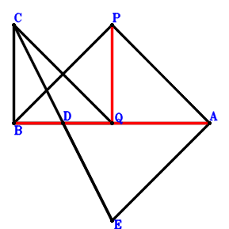
Answer：
\(\because \) D is the midpoint of BQ \(\therefore \small\overrightarrow{BD}=\dfrac{\small\overrightarrow{BQ}}{2}\).\(\because \) D is the midpoint of CE \(\therefore \small\overrightarrow{BE}=- \small\overrightarrow{BC} + 2 \small\overrightarrow{BD}=- \small\overrightarrow{BC} + \small\overrightarrow{BQ}\).\(\because \) PA=BP \(\therefore - \small\overrightarrow{BP}^{2} + \small\overrightarrow{PA}^{2}=- \small\overrightarrow{BP}^{2} + \left(\small\overrightarrow{BA} - \small\overrightarrow{BP}\right)^{2}=\small\overrightarrow{BA}^{2} - 2 \small\overrightarrow{BA} \cdot \small\overrightarrow{BP}=0\) . . . . . . \(①\)\(\because \) CQ=EA \(\therefore - \small\overrightarrow{EA}^{2} + \small\overrightarrow{QC}^{2}=- \left(\small\overrightarrow{BA} - \small\overrightarrow{BE}\right)^{2} + \left(\small\overrightarrow{BC} - \small\overrightarrow{BQ}\right)^{2}=\left(\small\overrightarrow{BC} - \small\overrightarrow{BQ}\right)^{2} - \left(\small\overrightarrow{BA} + \small\overrightarrow{BC} - \small\overrightarrow{BQ}\right)^{2}=- \small\overrightarrow{BA}^{2} - 2 \small\overrightarrow{BA} \cdot \small\overrightarrow{BC} + 2 \small\overrightarrow{BA} \cdot \small\overrightarrow{BQ}=0\) . . . . . . \(②\)\(\because \) CB⊥BA \(\therefore \small\overrightarrow{BA} \cdot \small\overrightarrow{BC}=0\) . . . . . . \(③\)In conclusion, \(\small\overrightarrow{AB} \cdot \small\overrightarrow{QP}=- \small\overrightarrow{BA} \cdot \left(\small\overrightarrow{BP} - \small\overrightarrow{BQ}\right)=- \small\overrightarrow{BA} \cdot \small\overrightarrow{BP} + \small\overrightarrow{BA} \cdot \small\overrightarrow{BQ}=1/2\cdot①+1/2\cdot②+③=0\), that is, BA⊥PQ.
Exercise 628： Let QCDA be a parallelogram. CB⊥BA. QC=PB and PA=BD. Prove that BA⊥QP.
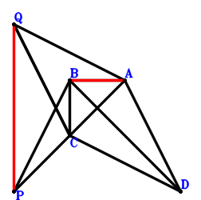
Answer：
\(\because \) QCDA is a parallelogram \(\therefore \small\overrightarrow{BD}=\small\overrightarrow{BA} + \small\overrightarrow{BC} - \small\overrightarrow{BQ}\).\(\because \) QC=PB \(\therefore - \small\overrightarrow{BP}^{2} + \small\overrightarrow{QC}^{2}=- \small\overrightarrow{BP}^{2} + \left(\small\overrightarrow{BC} - \small\overrightarrow{BQ}\right)^{2}=\small\overrightarrow{BC}^{2} - 2 \small\overrightarrow{BC} \cdot \small\overrightarrow{BQ} - \small\overrightarrow{BP}^{2} + \small\overrightarrow{BQ}^{2}=0\) . . . . . . \(①\)\(\because \) PA=BD \(\therefore - \small\overrightarrow{BD}^{2} + \small\overrightarrow{PA}^{2}=- \small\overrightarrow{BD}^{2} + \left(\small\overrightarrow{BA} - \small\overrightarrow{BP}\right)^{2}=\left(\small\overrightarrow{BA} - \small\overrightarrow{BP}\right)^{2} - \left(\small\overrightarrow{BA} + \small\overrightarrow{BC} - \small\overrightarrow{BQ}\right)^{2}=- 2 \small\overrightarrow{BA} \cdot \small\overrightarrow{BC} - 2 \small\overrightarrow{BA} \cdot \small\overrightarrow{BP} + 2 \small\overrightarrow{BA} \cdot \small\overrightarrow{BQ} - \small\overrightarrow{BC}^{2} + 2 \small\overrightarrow{BC} \cdot \small\overrightarrow{BQ} + \small\overrightarrow{BP}^{2} - \small\overrightarrow{BQ}^{2}=0\) . . . . . . \(②\)\(\because \) CB⊥BA \(\therefore \small\overrightarrow{BA} \cdot \small\overrightarrow{BC}=0\) . . . . . . \(③\)In conclusion, \(\small\overrightarrow{AB} \cdot \small\overrightarrow{QP}=- \small\overrightarrow{BA} \cdot \left(\small\overrightarrow{BP} - \small\overrightarrow{BQ}\right)=- \small\overrightarrow{BA} \cdot \small\overrightarrow{BP} + \small\overrightarrow{BA} \cdot \small\overrightarrow{BQ}=1/2\cdot①+1/2\cdot②+③=0\), that is, BA⊥QP.
Exercise 629： Let D be the midpoint of CE and BQ. CB⊥BA. CQ=BP and PA=EA. Prove that BA⊥PQ.
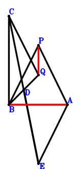
Answer：
\(\because \) D is the midpoint of BQ \(\therefore \small\overrightarrow{BD}=\dfrac{\small\overrightarrow{BQ}}{2}\).\(\because \) D is the midpoint of CE \(\therefore \small\overrightarrow{BE}=- \small\overrightarrow{BC} + 2 \small\overrightarrow{BD}=- \small\overrightarrow{BC} + \small\overrightarrow{BQ}\).\(\because \) PA=EA \(\therefore - \small\overrightarrow{EA}^{2} + \small\overrightarrow{PA}^{2}=- \left(\small\overrightarrow{BA} - \small\overrightarrow{BE}\right)^{2} + \left(\small\overrightarrow{BA} - \small\overrightarrow{BP}\right)^{2}=\left(\small\overrightarrow{BA} - \small\overrightarrow{BP}\right)^{2} - \left(\small\overrightarrow{BA} + \small\overrightarrow{BC} - \small\overrightarrow{BQ}\right)^{2}=- 2 \small\overrightarrow{BA} \cdot \small\overrightarrow{BC} - 2 \small\overrightarrow{BA} \cdot \small\overrightarrow{BP} + 2 \small\overrightarrow{BA} \cdot \small\overrightarrow{BQ} - \small\overrightarrow{BC}^{2} + 2 \small\overrightarrow{BC} \cdot \small\overrightarrow{BQ} + \small\overrightarrow{BP}^{2} - \small\overrightarrow{BQ}^{2}=0\) . . . . . . \(①\)\(\because \) CQ=BP \(\therefore - \small\overrightarrow{BP}^{2} + \small\overrightarrow{QC}^{2}=- \small\overrightarrow{BP}^{2} + \left(\small\overrightarrow{BC} - \small\overrightarrow{BQ}\right)^{2}=\small\overrightarrow{BC}^{2} - 2 \small\overrightarrow{BC} \cdot \small\overrightarrow{BQ} - \small\overrightarrow{BP}^{2} + \small\overrightarrow{BQ}^{2}=0\) . . . . . . \(②\)\(\because \) CB⊥BA \(\therefore \small\overrightarrow{BA} \cdot \small\overrightarrow{BC}=0\) . . . . . . \(③\)In conclusion, \(\small\overrightarrow{AB} \cdot \small\overrightarrow{QP}=- \small\overrightarrow{BA} \cdot \left(\small\overrightarrow{BP} - \small\overrightarrow{BQ}\right)=- \small\overrightarrow{BA} \cdot \small\overrightarrow{BP} + \small\overrightarrow{BA} \cdot \small\overrightarrow{BQ}=1/2\cdot①+1/2\cdot②+③=0\), that is, BA⊥PQ.